Figura 1: Tela de inclusão de uma classificação de contas.
Índice
Identificação do Sistema de Contas 14
Cadastro de Grupos do Plano de Contas 25
Receita Orçada/Arrecadada - Anexo 10 30
Demonstrativo da Despesa Orçada com a Realizada – Anexo 11 31
Balanço Orçamentário – Anexo 12 33
Balanço Financeiro – Anexo 13 34
Balanço Patrimonial – Anexo 14 36
Demonstração das Variações Patrimoniais – Anexo 15 38
Demonstração da Dívida Fundada Interna – Anexo 16 41
Demonstração da Dívida Flutuante – Anexo 17 42
Demonstrativo Extraorçamentário 43
Identificação do Sistema de Contas 48
Balancete da Despesa Sintético 56
Balancete da Receita por Recurso 59
Demonstrativo das Despesas e Receitas 62
Despesa por Órgão/Unidade/elemento 65
Demonstrativo da Execução da Despesa 66
Relatório Resumido da Execução Orçamentária 77
Anexo I – Balanço Orçamentário 77
Anexo II – Demonstrativo da Despesa por Função e Subfunção 80
Anexo III – Demonstrativo da Receita Corrente Líquida 82
Anexo V – Receitas e Despesas com RPPS 83
Anexo VI – Demonstrativo do Resultado Nominal 86
Anexo VII – Resultado Primário 88
Anexo X – Demonstrativo das Receitas e Despesas com MDE 91
Anexo IX – Demonstrativo de Restos a Pagar por Poder e Órgão 94
Anexo XVIII – Demonstrativo Simplificado do RREO 97
Anexo I – Demonstrativo da Despesa com Pessoal 99
Anexo II – Demonstrativo da Dívida Consolidada Líquida 100
Anexo III – Demonstrativo das Garantias e Contragarantias 102
Anexo IV – Demonstrativo de Operações de Crédito 103
Anexo V – Demonstrativo de Disponibilidade de Caixa 105
Anexo VII – Demonstrativo dos Limites 107
Conferência Despesa/Receita 109
Relatório da Receita Mensal 115
Utilitários da Contabilidade 139
Encerramento de período Contábil 140
Permite alterar parâmetro do Relatório 141
Informações em Formato TXT 143
MÓDULO CONTABILIDADE
Este módulo proporciona aos servidores encarregados dos registros contábeis do ente público, o registro de todos os atos praticados pelo administrador, quer sejam de natureza orçamentária ou meramente administrativos, representantes de valores que afetarão o Patrimônio Público no futuro.
A contabilidade aplicada à administração pública faz o registro da previsão da receita e a fixação da despesa, conforme estabelecido na Lei Orçamentária Anual aprovada pelo Poder Legislativo, escriturando a execução da receita e despesa , comparando a previsão com a realização.
Este cadastro refere-se basicamente a Instituição a que uma conta pertence no Plano. Em um Município existem basicamente três Instituições representadas pelo Poder Executivo, o Poder Legislativo e o Regime Próprio de Previdência dos Servidores Municipais. Está atribuído um código para cada uma delas e ainda um outro destinado a outras Instituições, tais como Empresas Públicas, Autarquias e/ou Fundações. Operacionalmente, o sistema permite a Inclusão, Alteração ou Exclusão destes registros.
Para a inclusão de uma nova Classificação, basta dar entrada no código e descrição da mesma nos campos correspondentes e clicar no botão "Incluir". Caso queira ver as classificações já existentes para evitar duplicidades, o usuário poderá clicar no botão "Pesquisar" e o sistema mostrará todo o cadastro.
Figura
1: Tela de inclusão de uma classificação de
contas.
Para alterar uma classificação já existente, basta selecioná-la na pesquisa que abrirá ao acessar o menu. Bastará, então, alterar os dados e clicar no botão "Alterar". Para fazer nova alteração, basta clicar no botão "Pesquisar" e repetir o processo.
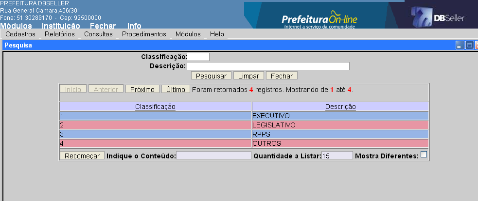
Figura
2: Pesquisa de classificações de contas.
Para excluir uma classificação, basta seleciona-la na tela de pesquisa que abrirá ao acessar o menu. Um clique no botão "Excluir" efetivará a operação. Para nova exclusão, basta clicar no botão "Pesquisar" e repetir o processo.
Figura
3: Tela para seleção da classificação a
excluir.
Esta rotina possibilita gravar os arquivos txt utilizados pelo PAD, do exercício anterior em Municípios em início de implantação do DBPortal, haja visto que a execução orçamentária era executada em outro sistema. Assim estes arquivos ficarão armazenados dentro de um diretório junto do aplicativo DBPortal, e poderão ser utilizados no mesmo momento em que forem gerados os arquivos txt do exercício, para prestação de contas bimestral, conforme exigido pelo TCERS.
Nesta opção, o usuário irá incluir os arquivos de exercícios anteriores, necessários à prestação de contas bimestral, que, não estão dentro da massa de dados do DBPortal. Deverão ser digitados apenas dois ítens, o Código do arquivo, que nada mais será do que um número seqüencial iniciando com o número 1, e o nome do arquivo, que deve ser aquele já definido pelo TCERS, por exemplo BVER_ANT.TXT. Após a inclusão destes dois campos, o respectivo arquivo deverá ser copiado e colado dentro do espaço maior disponibilizado na tela do sistema, não esquecendo de preencher o campo “Código do Tribunal”, que identifica o agrupamento, sendo que se os arquivos do Legislativo são gerados em conjunto com os do Executivo, não é necessário cadastrar os arquivos do Legislativo, somente os do Executivo.

Figura
4: Tela de inclusão dos arquivos anteriores do PAD.
Esta opção permite a alteração dos campos Nome do Arquivo, Arquivo e Código do Tribunal, a fim de corrigir alguma informação que tenha sido incluída incorretamente. Para executar o procedimento, basta incluir o código do arquivo no campo respectivo ou clicar sobre a linha em que encontra-se o arquivo a ser alterado.

Figura
5: Tela de seleção dos arquivos do PAD para fins de
alteração.
Nesta opção é possível excluir os arquivos txt do exercício anterior, que foram incluídos erroneamente ou por algum outro motivo, bastando para isto, no campo Código do Arquivo inserir o código a ser excluído, ou clicar na linha em que o código está sendo demonstrado na tela, após o arquivo ser escolhido o sistema irá mostrar a tela abaixo, bastando, para executar o procedimento clicar no botão excluir.

Figura
6: Demonstração de um registro selecionado para
exclusão.
Este cadastro possibilita a inclusão, alteração ou exclusão das transações automáticas ou seja , dos lançamentos automáticos efetuados pelo sistema, quando da execução orçamentária, tanto da parte da receita quanto da despesa, bem como do encerramento do exercício, no zeramento das contas do sistema orçamentário, inscrição dos Restos a Pagar não Processados e Apuração do Resultado do Exercício.
Esta opção possibilita incluirmos uma transação (lançamento) para que o sistema efetue o respectivo lançamento automático. Para fazer corretamente a inclusão, primeiramente é necessário que saibamos exatamente o tipo de documento que iremos utilizar para incluir a transação necessária ao evento desejado. Ao adentrarmos à tela de inclusão, o sistema disponibilizará um campo para o código do documento e outro para a descrição deste código, e na mesma tela, os documentos já existentes. Para iniciar o procedimento devemos incluir o código do documento ou clicar sobre a linha do documento pretendido. Se o documento não estiver sendo mostrado na tela basta clicarmos no botão “próximo” que será mostrada a tela seguinte com mais documentos, assim sucessivamente até o último documento cadastrado.

Figura
7: Pesquisa de documentos para fins de cadastro da transação.
Iremos utilizar o procedimento de inclusão somente se ainda não houver nenhum registro incluso neste documento, caso contrário deveremos utilizar o procedimento “alteração”, que será explicado no item seguinte. O DBPortal tem como padrão utilizar uma seqüência lógica de numeração para cada lançamento, por exemplo primeiro, segundo terceiro e assim sucessivamente de acordo com a quantidade de lançamentos necessários para que determinado registro seja efetuado de acordo com o plano de contas padrão. O primeiro item a ser preenchido na inclusão é o histórico padrão, que deverá ser previamente cadastrado, se souber o número respectivo ao documento correspondente basta digitá-lo no campo correspondente, senão, podemos clicar na âncora “Histórico”, e o sistema trará na tela a lista de todos os históricos cadastrados e escolher o desejado.
Os demais campos a serem preenchidos serão os seguintes:
Observações: o campo é configurado para livre digitação de texto. Normalmente, tem-se adotado a prática de descrever uma seqüencia de lançamentos, tais como “PRIMEIRO”, “SEGUNDO” e assim por diante.
Valor: preencher com zero.
Obrigatório: deve-se manter o valor padrão do campo, que é “NÃO”.
Evento Automático: consiste em um procedimento criado para dispensar o usuário da manutenção das transações acessando este cadastro, principalmente nas inclusões de novas contas no Plano. Deste modo, a configuração da transação já é realizada no momento do cadastro do código reduzido desta desta conta. Atualmente, este procedimento está habilitado para as contas contábeis de Despesa Orçamentária, que tem sua inclusão feita automaticamente nos eventos de liquidação e anulação de liquidação.
Após executados os procedimentos acima, devemos clicar na aba lançamentos, para incluirmos a transação propriamente dita, onde devemos preencher o exercício correspondente do registro, as contas à débito e à credito e a instituição em que o registro deverá ser efetuado. Os demais campos do cadastro são destinados a operações específicas e utilizados para a identificação de um determinado evento ou lançamento com característica própria. São eles:
Tipo Resto: os tipos de restos são classificações previamente criadas para classificar os empenhos inscritos em Restos a Pagar. As classificações mais comuns são “Fornecedores”, “Pessoal”, “INSS”, “FGTS” e “PASEP”. Logo, este campo vincula um lançamento a uma destas classificações, executando o lançamento configurado sempre que o tipo de resto associado ao empenho for encontrado.
Compara: deve ser utilizado sempre que um dos lançamentos, a débito ou a crédito, for variável.
Tipo de Compra: identifica e associa um lançamento contábil a uma modalidade de licitação.
Observação: Campo para livre digitação.
Após o preenchimento dos campos necessários, basta clicar no botão incluir para que o procedimento seja executado. Recomenda-se atenção para o botão “Excluir todos”, que uma vez utilizado não existe a possibilidade de retorno.

Figura
8: Tela de inclusão de lançamentos no cadastro de
transações.
Na opção alteração, a tela de navegação é idêntica a tela de inclusão, sendo que as possibilidades a serem exploradas neste campo serão a de alteração de alguma transação poderá ter sido cadastrada incorretamente ou até mesmo a exclusão de determinado lançamento, tendo em mente que a exclusão possível será somente a do lançamento, nunca do documento como um todo. Na aba Transações teremos os botões “Alterar” , que deverá ser clicado após alterarmos algum campo desta tela, “Selecionar histórico”, utilizado para mudar de documento utilizado, “Novo lançamento”, para incluir um novo lançamento dentro do documento em que estamos e “Pesquisar documentos” , para pesquisar os documentos seqüenciais cadastrados para este registro.

Figura
9: Alteração de uma transação.
Nesta opção pode-se excluir totalmente o documento escolhido, com a ressalva de que o sistema somente procederá na exclusão total, se não houver nenhum registro de lançamento, ou seja, nenhuma transação parametrizada, caso haja transação, é necessário que seja acessada a opção “Alteração”, e excluída a transação para somente após o sistema permitir que o documento seja excluído, para executar o procedimento de exclusão, basta clicar no botão excluir.

Figura
10: Exclusão de uma transação.
Este cadastro refere-se aos históricos padrões que serão utilizados em todos os lançamentos contábeis automáticos ou manuais, ou seja, tanto quando o usuário estiver incluindo registros contábeis através do Procedimento "Manutenção de Lançamentos" ou quando estiver movimentando Empenhos ou processando Boletins da Tesouraria onde o sistema executará os lançamentos contábeis configurados no "Cadastro de Transações". Operacionalmente, o sistema permite a Inclusão, Alteração ou Exclusão destes registros, sendo que a opção exclusão não será aceita se o histórico já foi utilizado para algum lançamento.
Para Incluir um histórico padrão, basta digitar nos campos correspondentes o Código e a Descrição respectivamente. A opção "Complemento" refere-se a obrigatoriedade ou não de se digitar um complemento para o histórico quando o usuário estiver incluindo um lançamento contábil. Um clique no botão "Incluir" efetivará o cadastro. O botão "Pesquisar" acionará a função de pesquisa onde o usuário poderá verificar se um determinado histórico já existe no cadastro.
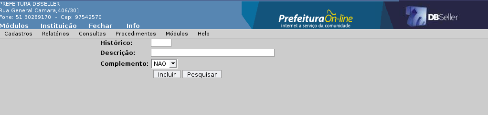
Figura
11: Formulário de inclusão de um histórico.
Ao acessar este menu, o sistema abrirá a função de pesquisa onde o usuário poderá selecionar o histórico a ser alterado. Após a seleção, basta alterar os campos desejados e clicar no botão "Alterar". Para nova seleção, clicar no botão "Pesquisar".

Figura
12: Tela de pesquisa do cadastro de históricos
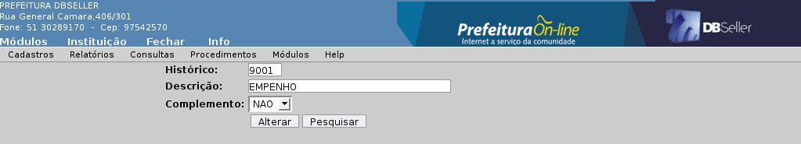
Figura
13: Registro selecionado para alteração.
Para excluir um histórico, basta selecioná-lo através da função de pesquisa e clicar no botão "Excluir". Para efetuar nova exclusão, basta clicar no botão "Pesquisar".
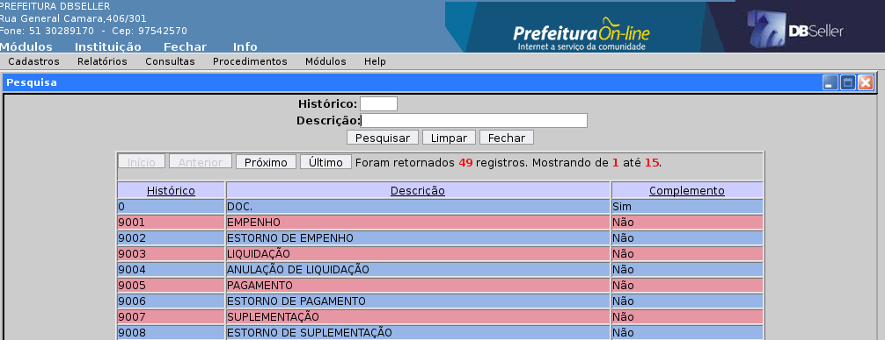
Figura
14: Seleção de históricos para fins de exclusão.
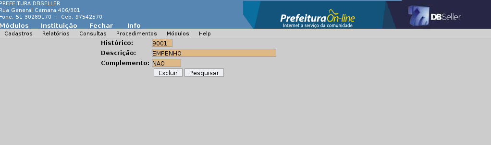
Figura
15: Registro selecionado para exclusão.
Neste cadastro estão armazenados os sistemas de contas que determinarão a classificação das operações típicas da Administração. O elenco de contas que contabilizará todos os atos e fatos da Administração estão classificados em quatro sistemas básicos, que são: SISTEMA FINANCEIRO, SISTEMA PATRIMONIAL, SISTEMA ORÇAMENTÁRIO e SISTEMA COMPENSADO. O DBPortal, para fins de integração de dados entre módulos e identificação das contas em diversas funcionalidades, dividiu as contas do sistema FINANCEIRO em mais três classificações: FINANCEIRO CAIXA que identifica todas as contas de Caixa existentes na Administração, FINANCEIRO BANCOS que identifica todas as contas bancárias existentes na Administração FINANCEIRO EXTRA-ORÇAMENTÁRIO que identifica todas as contas que registrarão movimentação de Receitas ou despesas de natureza Extra-Orçamentária.
Para incluir uma nova identificação de Sistema de Contas, basta acessar este menu, preencher os campos selecionados e clicar no botão "Incluir". Os campos são os seguintes:
Sistema: Representa o código do sistema de contas que será cadastrado. Recomenda-se, antes de efetivar o cadastro, clicar no botão "Pesquisar" para ver todo o cadastro bem como o código do último registro cadastrado e digitar o número seguinte.
Descrição: Representa o nome do sistema de contas a ser cadastrado.
Descrição Reduzida: São os sistemas de contas básicos, definidos em Lei. Não podem ser alterados e SEMPRE estarão associados aos registros cadastrados.

Figura
16: Formulário de inclusão de um novo sistema de
contas.
Para alterar um sistema de contas já cadastrado, basta acessar o menu e o sistema abrirá a "função de pesquisa" onde serão exibidos todos os sistemas existentes. Deve-se então, selecionar um registro, alterar os campos desejados e clicar no botão "Alterar". Para alterar um novo registro, basta clicar no botão "Pesquisar".
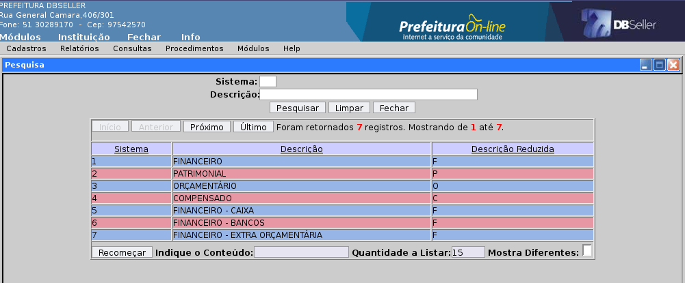
Figura
17: Pesquisa de registros para fins de alteração.

Figura
18: Registro selecionado para alteração.
Para excluir um sistema de contas, deve-se acessar o menu, selecionar o registro desejado na "função de pesquisa" e efetivar a operação clicando no botão "Excluir". Para selecionar um novo registro para exclusão, basta clicar no botão "Pesquisar".
Figura
19: Pesquisa de registros para fins de exclusão.

Figura
20: Registro selecionado para exclusão.
Neste
menu, o usuário poderá incluir, alterar ou excluir
todas as contas que irão registrar os atos e fatos da
Contabilidade. O cadastro do Plano de Contas no DBPortal atende
integralmente a estrutura dos elencos de contas instituídos
pelo TCE-RS.
O Cadastro do Plano de Contas é fonte de dados
para todas as funcionalidades do sistema, tais como Orçamento,
Empenho, Tesouraria, Compras, etc. Logo, um bom cadastro é uma
das garantias de dados corretos em todos os processos da Instituição.
Para a inclusão de uma nova conta, deve-se preencher os seguintes campos:
Estrutural Contabilidade: Incluir o código estrutural da conta. Se clicar no botão "Verificar", o sistema validará a conta, impedindo a inclusão de estruturais repetidos.
Descrição da conta: Digitar a descrição da conta.
Finalidade: Campo livre onde o usuário poderá informar informações sobre a utilização da conta ou do que julgar relevante para a mesma.
Sistema: Selecionar o sistema em que a conta se enquadra no cadastro da IDENTIFICAÇÃO DO SISTEMA DE CONTAS.
Classificação: Selecionar a classificação da conta conforme o cadastro da CLASSIFICAÇÃO DAS CONTAS.
Tipo de conta: As contas podem ser ANALÍTICAS, que receberão um CÓDIGO REDUZIDO e receberão lançamentos contábeis ou SINTÉTICAS, que serão as contas "mães" e representarão níveis consolidadores nos balancetes.
DADOS DA CONTA BANCÁRIA
Sempre que for cadastrada uma conta contábil de BANCO, os campos Banco, Agência, DV da Agência, Conta Bancária, DV da conta e Identificador (CNPJ) deverão ser preenchidos com os dados bancários da conta a ser cadastrada. Estas informações terão integração com algumas funcionalidades do módulo caixa como, por exemplo a emissão do "Boletim da Tesouraria". Depois de preenchidos todos os campos, clicar no botão "Incluir".
ABA REDUZIDOS
No momento em que o usuário cadastrar uma conta ANALÍTICA, o sistema liberará a referida aba onde serão disponibilizados os seguintes campos para preenchimento:
Instituição: Selecionar a Instituição a que a conta pertencerá. Lembrando sempre que cada conta contábil poderá ter UM código reduzido por Instituição.
Código do Recurso: Selecionar o código do recurso orçamentário a que a conta pertence.
Contrapartida: É importante lembrar que este campo deve ser preenchido SOMENTE SE A CONTA CONTÁBIL CADASTRADA FOR UMA DESPESA ORÇAMENTÁRIA. Deste modo, ficará registrado que, na fase da liquidação da despesa, o sistema contabilizará a crédito a conta representativa do PASSIVO FINANCEIRO definida como contrapartida. Basicamente as contas de despesa são lançadas contra as contas do Passivo:
Fornecedores do Exercício
Pessoal a Pagar do Exercício
INSS do Exercício
FGTS do Exercício
PASEP do Exercício
No momento em que o usuário preencher todos os campos necessários e clicar no botão "Incluir", o sistema cadastrará o código reduzido, que ficará visível logo abaixo dos campos e também fará inclusão automática no "Cadastro de Transações" (para as contas de Receita e Despesa Orçamentária desde que no cadastro de transações esteja configurado o campo “EVENTO AUTOMÁTICO”).

Figura
21: Formulário para inclusão de uma nova conta.
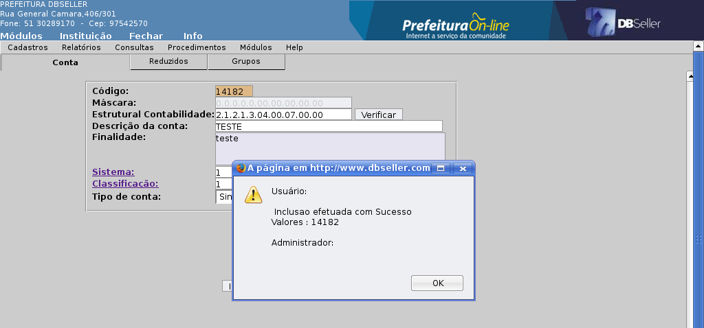
Figura
22: Confirmação de um cadastro realizado com sucesso.

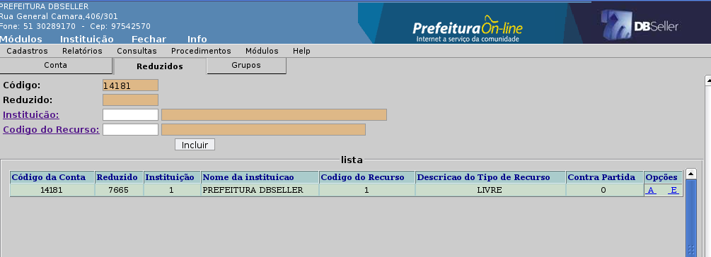
Figura
23: Tela de cadastro de código reduzido para uma conta
analítica.
Ao acessar este menu, o sistema automaticamente mostrará a "função de pesquisa" onde o usuário poderá selecionar a conta desejada para alteração. Neste momento o sistema disponibilizará os dados na seguinte ordem:
DADOS DAS CONTAS CONTÁBEIS
E BANCÁRIAS
Nesta primeira tela, na aba Conta serão dispostos todos os campos cadastrados para alteração. Todos estarão habilitados exceto os campos Código e Estrutural Contabilidade. Ao concluir as alterações que julgar necessárias o usuário deverá clicar no botão "Incluir".
Para selecionar uma nova conta para alteração, basta clicar no botão "Pesquisar".
CÓDIGOS REDUZIDOS DAS CONTAS
Ao clicar na aba Reduzidos o usuário poderá realizar três procedimentos:
Adicionar um novo código reduzido para a a conta (lembrando que cada conta pode ter UM código reduzido por instituição), e preencher os campos da mesma forma de quando estiver incluindo uma nova conta no plano.
Alterar um código reduzido acionando, na tela Lista, o link "A", que está na última coluna da lista, chamada "Opções". Ao clicar, o cadastro ficará disponível para alteração. Os campos disponíveis são Código do Recurso e Contrapartida. Para efetivar a operação, basta clicar no botão "Alterar". Para selecionar uma nova conta para alteração, o usuário deverá ir para a aba Conta e clicar no botão "Pesquisar".
Excluir um código reduzido acionando, na tela Lista, o link "E", que está na última coluna da lista, chamada "Opções". Ao clicar, o cadastro ficará disponível para alteração. Para efetivar a operação, basta clicar no botão "Excluir". Ao excluir todos os códigos reduzidos de uma conta, o sistema a transformará em SINTÉTICA. O sistema não permitirá a exclusão de um código reduzido que esteja envolvido em algum "lançamento contábil".

Figura
24: Pesquisa no Plano de Contas para fins de alteração.

Figura
25: Conta selecionada para alteração.

Figura
26: Tela que permite a alteração de um código
reduzido de uma conta.
Ao acessar este menu, o sistema automaticamente mostrará a "função de pesquisa" onde o usuário poderá selecionar a conta desejada para exclusão. O sistema não permitirá, de forma direta, a exclusão de uma conta ANALÍTICA, pelas simples razões:
de que a conta analítica possui códigos reduzidos e,
estes códigos podem estar envolvidos em algum "lançamento contábil".
Portanto, o primeiro passo para a exclusão de uma conta é REMOVER os códigos reduzidos. Isto será possível ALTERANDO CONTAS NO PLANO e seguindo os passos para exclusão de um código reduzido. Feito isso, a conta estará efetivamente disponível para exclusão. Deste modo, certificado de que a conta que deseja remover não tem mais reduzidos, o usuário poderá selecioná-la e efetivar a exclusão clicando no botão "Excluir".

Figura
27: Pesquisa no Plano de Contas para fins de exclusão.

Figura
28: Exemplo de uma conta selecionada para exclusão.
Documentos, dentro da ótica do DBPortal, são "Eventos" que o sistema executa sempre que for executada uma operação típica da Instituição. Deste modo, cada documento representa um evento diferente para uma operação diferente. Na prática, funciona basicamente da seguinte maneira: o usuário executa uma operação no sistema (um empenho de despesa, por exemplo), o sistema dispara um evento, que é justamente o documento e este executa todos os lançamentos contábeis previamente configurados no CADASTRO DE TRANSAÇÕES.
Para a inclusão de um novo documento, basta preencher todos os campos e clicar no botão "Incluir". Recomenda-se verificar o último registro cadastrado através do botão "Pesquisar"e utilizar o código seguinte.
Os campos deste cadastro são:
Código do documento: Será o código que o sistema utilizará quando for disparado um evento que resultará em um lançamento contábil.
Descrição: Deve ser digitado a descrição desejada para o documento.
Tipo de lançamento: Representa um evento propriamente dito. Tem como aplicação prática a possibilidade de cadastrar diversos tipos de Liquidação da Despesa, por exemplo. Seja de qual tipo for, o documento SEMPRE será uma Liquidação de Despesa.

Figura
29: Formulário para inclusão de um documento.
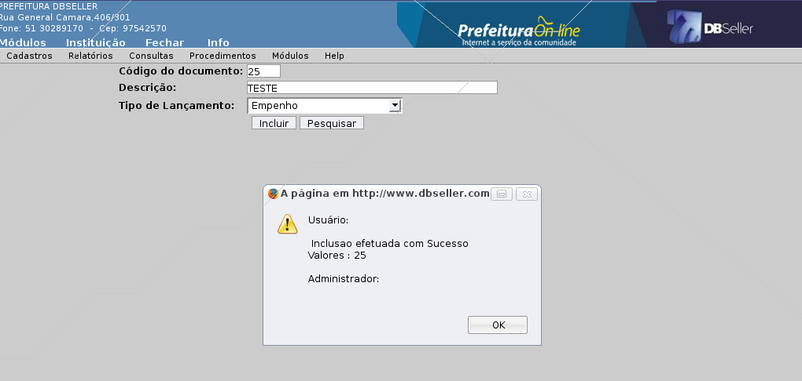
Figura
30: Exemplo de uma inclusão de documento bem sucedida.
Para alterar um documento já existente, basta acessar o menu, selecionar um registro na "função de pesquisa", alterar os campos desejados e efetivar a operação clicando no botão "Alterar".
Para selecionar um novo registro, clicar no botão "Pesquisar".
Para excluir um documento já existente, acessar o menu, selecionar um registro na "função de pesquisa" e efetivar a operação clicando no botão "Excluir". Para selecionar um novo registro, basta clicar no botão "Pesquisar".
Os grupos do Plano de Contas foi um recurso criado para fins de organização de algumas rotinas do sistema. Nele se definem por exemplo, quais contas farão parte do Balancete da Receita, quais contas serão consideradas como Aplicações Financeiras vinculadas ao FUNDEB (para utilização no cálculo do Índice da Educação, além de outros casos. Planeja-se utilizar esta estrutura para definir, entre outras facilidades, algumas automatizações de lançamentos (a serem definidas) e alguns filtros onde o usuário poderá de livre escolha selecionar.
A inclusão de um grupo passa por duas fases, que são a definição do nome do grupo e a escolha das contas contábeis que farão parte dele. O botão “Pesquisar” permite a visualização dos grupos já existentes. Definindo o nome do grupo, basta clicar no botão “Incluir”.
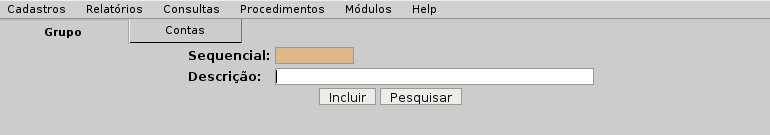
Figura
30: Tela de inclusão de um grupo.
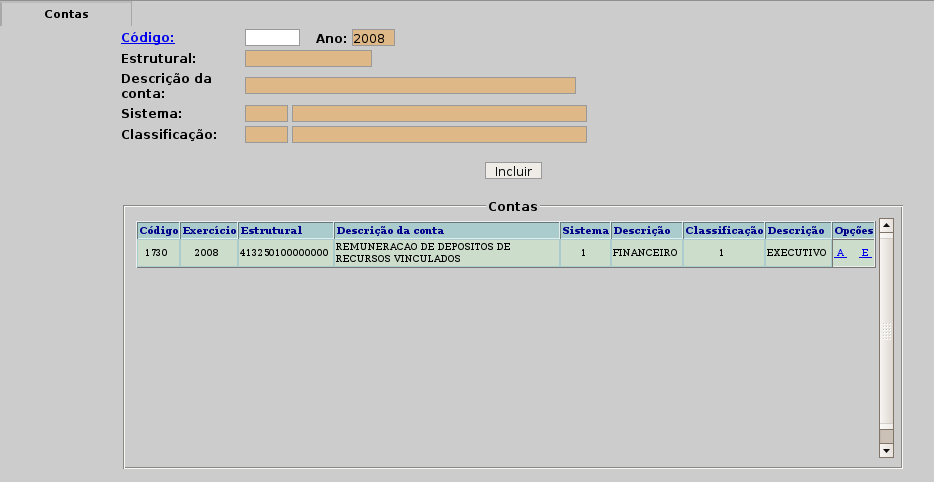Figura 31: Seleção de contas para um grupo.
Altera um grupo de contas. Ao acessar o menu, o sistema apresentará uma tela para selecionar o registro desejado e, clicando sobre este, fica o registro disponível para que se altere sua descrição. Feita a alteração, basta confirmá-la com um clique no botão “Alterar”.

Figura
32: Tela de alteração de um grupo.
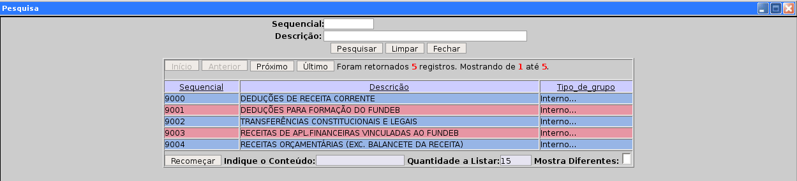Figura 33: Tela de seleção de um grupo para alteração.
Exclui um grupo de contas. Ao acessar o menu, o sistema apresentará uma tela para selecionar o registro desejado e, clicando sobre este, fica o registro disponível para exclusão, onde bastará confirmá-la com um clique no botão “Excluir”. As telas para esta manutenção são idênticas as demonstradas no menu anterior.
Este cadastro tem as funções de:
definir quais as contas cadastradas no Plano que serão utilizadas no exercício e,
armazenar o saldo inicial das contas no exercício.
Normalmente, o saldo inicial das contas é inserido manualmente na implantação do sistema em um determinado exercício e para os seguintes, esta manutenção é feita automaticamente através da rotina "Processa Abertura do Exercício", o que não impede de o usuário ajustar manualmente este saldo através deste cadastro, caso houver necessidade.
Para incluir uma conta no exercício, basta acessar este menu, selecionar a conta desejada na "Função de pesquisa" e informar os dados da conta nos campos:
Código do Recurso: Informar o código do recurso orçamentário a que pertence a conta. Pode ser digitado diretamente ou pesquisado clicando-se no link e abrindo a função de pesquisa.
Saldo Abertura a Crédito: Informar o saldo de abertura da conta, caso esta tenha saldo credor no último balancete.
Saldo Abertura a Débito: Informar o saldo de abertura da conta, caso esta tenha saldo devedor no último balancete.

Figura
34: Formulário de inclusão de uma conta do exercício.
Para alterar uma conta do exercício, basta acessar este menu, selecionar a conta desejada na "função de pesquisa", alterar os campos necessários e efetivar a operação clicando no botão "Alterar". Para alterar um novo registro, basta clicar no botão "Pesquisar".
Para excluir uma conta
do exercício, basta acessar o menu e o sistema abrirá a
"função de pesquisa" onde serão
exibidos todos os registros. Deve-se então selecionar o
registro a ser removido e clicar no botão "Excluir".
Para excluir um novo registro, basta clicar no botão
"Pesquisar".

Figura
35: Pesquisa de contas do exercício para fins de alteração
ou exclusão.
A Lei
4320/64 prevê e regulamenta, em seus artigos 101 a 106 o
Balanço Geral e todos os ANEXOS
que o compõem.
Art. 101. Os
resultados gerais do exercício serão
demonstrados
no Balanço Orçamentário, no Ba-
lanço
Financeiro, no Balanço Patrimonial, na De-
mostração
das Variações Patrimoniais, segundo
os Anexos
12,13,14 e 15 e os quadros demons-
trativos constantes dos Anexos
1,6,7,8,9,10,11,
16 e 17.

Figura
36: Localização dos anexos do Balanço Geral nos
menus do Módulo Contabilidade.
O Anexo 10, previsto na Lei 4320/64 em seu artigo 101, é quase que auto-explicativo pelo seu nome. O relatório imprime as Receitas Orçamentárias e a demonstração dos valores Orçados, Arrecadados e suas diferenças para mais ou para menos. As opções de impressão são a Instituição e o Intervalo de datas, com a possibilidade de emitir a previsão da receita com os valores iniciais ou a previsão atualizada.

Figura
34: Tela de emissão do Anexo 10.
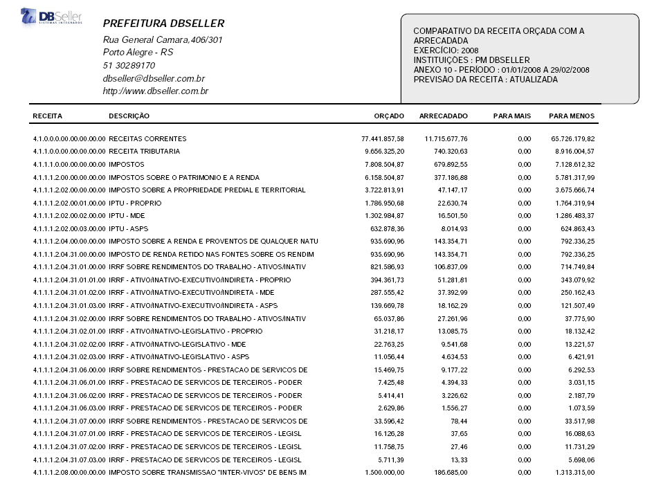
Figura
37: Exemplo de emissão do Anexo 10.
O Anexo 11, previsto na Lei 4320/64 em seu artigo 101, demonstra as Despesas Orçamentárias em seus valores previstos em comparação aos realizados e suas diferenças para mais ou para menos.
A demonstração dos valores do Anexo
segrega os valores previstos conforme PPA/LDO/LOA
e os CRÉDITOS
ADICIONAIS
SUPLEMENTARES dos Créditos ESPECIAIS
e EXTRAORDINÁRIOS
e deve, fundamentalmente, exibir a Despesa EMPENHADA.
OPÇÕES DE IMPRESSÃO
Instituição: permite emitir o Anexo de somente uma Instituição ou de forma consolidada.
Filtro: permite filtrar o relatório pelo Órgão ou pela Unidade Orçamentária, podendo selecionar uma, várias ou todas.
Agrupar por: refere-se a forma de impressão das informações. Conforme a opção escolhida pelo usuário, o sistema agrupará as informações por Órgão, Unidade ou Geral onde imprimirá os valores totais de todo o Orçamento.
Tipo: permite imprimir, no campo correspondente, a Execução da Despesa nas fases de , e Pagamento de Empenho. Mesmo que, para os efeitos da Lei 4320/64, o relatório deva demonstrar a Despesa Empenhada, (ver artigo 35), nada impede à Contadoria adicionar no Balanço este Anexo demonstrando a Despesa Liquidada e/ou Paga.
Mês: seleciona o período a ser impresso.

Figura
36: Opções de impressão do Anexo 11.

Figura
38: Exemplo da emissão do Anexo 11.
O Artigo 102 da Lei
4320/64, trata o Balanço Orçamentário (Anexo
12) da seguinte forma:
Art. 102. O Balanço
Orçamentário demonstrará
as receitas e
despesas previstas em confronto
com as realizadas.
Segundo referida Lei, o Anexo 12 é o modelo de apresentação do Balanço Orçamentário, que ainda será composto pelos ANEXOS 1 e 6 a 11. Para imprimir o Anexo 12, bastará apenas indicar a Instituição e o Mês desejados e clicar no botão "Imprimir".

Figura
39: Opções de impressão do Anexo 12.
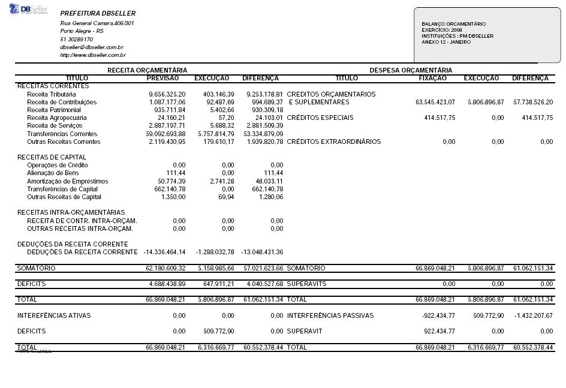
Figura
39: Exemplo de impressão do Anexo 12.
O Artigo 102 da Lei 4320/64,
trata o Balanço Orçamentário (Anexo 12) da
seguinte forma:
O Balanço
Financeiro demonstrará a receita
e a despesa
orçamentárias, bem como os
recebimentos e os
pagamentos de nature-
za extra-orçamentária,
conjugados com os
saldos em espécie provenientes do
exercí-
cio anterior, e os que se transferem para
o
exercício seguinte.
Parágrafo único. Os
Restos a Pagar do e-
xercício serão computados na
receita ex-
tra-orçamentária para compensar sua in-
clusão na despesa orçamentária.
Para a emissão deste demonstrativo, deve-se observar a sua configuração executando o procedimento de Parâmetros e Variáveis de Relatórios. O relatório devidamente configurado, poderá ser emitido selecionando-se a Instituição e a seleção do Período, feita através da indicação do mês inicial e final desejados, e será impresso com um clique no botão "Imprimir".

Figura
40: Opções de impressão do Anexo 13.

Figura
41: Exemplo de impressão do Anexo 13.
O Artigo
105 da Lei 4320/64, trata o Balanço Patrimonial (Anexo
14) da seguinte forma:
Art.
105. O Balanço Patrimonial demonstrará:
I. Ativo
Financeiro;
II. Ativo Permanente;
III. Passivo Financeiro;
IV. Passivo Permanente;
V. Saldo Patrimonial; e
VI. As
Contas de Compensação.
§ 1º. O Ativo
Financeiro compreenderá os créditos
e valores
realizáveis independentemente de auto-
rização
orçamentária e os valores numerários.
§
2º. O Ativo Permanente compreenderá os bens ,
créditos
e valores cuja mobilização ou alienação
dependa de autorização legislativa.
§ 3º.
O Passivo Financeiro compreenderá os com-
promissos
exigíveis cujo pagamento independa de
autorização
orçamentária.
§ 4º. O Passivo Permanente
compreenderá as dívi-
das fundadas e outras que
dependam de autori -
zação legislativa para
amortização ou resgate.
§ 5º. Nas contas
de compensação serão registra-
dos os bens,
valores, obrigações e situações não
compreendidas nos parágrafos anteriores e que,
imediata
ou indiretamente, possam vir a afetar o
patrimônio.
Para a emissão deste demonstrativo deve ser observada a sua configuração executando o procedimento de Parâmetros e Variáveis de Relatórios. O relatório, devidamente configurado, poderá ser emitido selecionando-se a Instituição e o Mês desejado. Para a emissão, basta um clique no botão "Imprimir".

Figura
42: Opções de impressão do Anexo 14.

Figura
43: Exemplo de Impressão do Anexo 14.
O Artigo
104 da Lei 4320/64, trata a Demonstração das
Variações Patrimoniais (Anexo 15) da seguinte forma:
Art.
104. A Demonstração das Variações
Patrimoniais
evidenciará as alterações
verificadas no Patrimônio,
resultantes ou independentes da
execução orçamen-
tária, e indicará
o resultado patrimonial do exercício.
A
Demonstração das Variações
Patrimoniais informa as alterações efetivas
sofridas pelo patrimônio durante o transcorrer do exercício
financeiro. Em realidade, esta demonstração indica, por
um lado, os recursos financeiros efetivamente obtidos, e por outro,
os recursos aplicados e utilizados nas várias atividades
executados pela administração.
COMPOSIÇÃO
DO DEMONSTRATIVO
Variações Ativas
Resultantes da Execução Orçamentária:
Variações Financeiras, tais como as receitas obtidas no exercício financeiro;
Mutações Patrimoniais da Despesa, decorrentes da integração de elementos ativos ao patrimônio ou da baixa de valores do passivo permanente da entidade pública.
Independentes da Execução Orçamentária:
Fatos extraordinários não financeiros, positivos, ocorridos no exercício e que provocam acréscimos na situação líquida patrimonial da entidade.
Resultado Patrimonial:
Resultado Econômico negativo, indicando déficit patrimonial alcançado nas operações realizadas no período financeiro a que se refere a demonstração. É adicionado algebricamente à situação líquida patrimonial anterior.
Variações Passivas
Resultantes da Execução Orçamentária:
Variações decorrentes da utilização efetiva de recursos na produção ou na prestação de serviços, bem como, a aquisição de bens e serviços para utilização futura;
Mutações Patrimoniais da Receita, decorrentes da incorporação de valores passivos assumidos ou da desincorporação de valores ativos por recuperação de custo em alienações de bens e direitos.
Independentes da Execução Orçamentária:
Fatos extraordinários não monetários, ocorridos no período financeiro, e que provocaram decréscimos na situação líquida patrimonial anterior da entidade.
Resultado Patrimonial:
Resultado Econômico positivo, indicando superávit patrimonial alcançado nas operações realizadas no período financeiro a que se refere a demonstração. É adicionado algebricamente à situação líquida patrimonial anterior.
Para a emissão deste demonstrativo, deve-se observar a sua configuração observando o procedimento de “Parâmetros Variáveis e Relatórios”.
O relatório, devidamente configurado, poderá ser emitido selecionando-se a Instituição e a seleção do Período, feita através da indicação do mês inicial e final desejados. Para emissão, bastará um clique no botão "Imprimir".

Figura
44: Opções de impressão do Anexo 15.
Figura 45: Exemplo de impressão do Anexo 15.
Na prática, o Anexo 16, Demonstração da Dívida Fundada Interna, informa analiticamente, os valores que compõem a Dívida Fundada Interna constante do Passivo Permanente do Balanço Patrimonial. Diante da dificuldade de obtenção de todas as informações constantes neste relatório conforme o modelo regulamentado pela Lei 4320/64, principalmente as informações de leis, contratos, termos de parcelamento e outras informações similares de cada item que compõe a dívida do Município, o DBPortal dispõe, para este anexo, uma aba chamada Títulos. Nesta aba, estão dispostos todos os campos descritos no modelo regulamentado pela lei supracitada, para livre digitação. Logo, o usuário deverá preencher os campos com as informações que dispõe sobre os documentos de origem das dívidas e os valores da movimentação contábil do período, que podem ser obtidas facilmente nos Balancetes.
Após a inclusão das informações, basta emitir o relatório clicando no botão "Imprimir".

Figura
46: Tela de emissão do Anexo 16.

Figura 47: Exemplo de emissão do Anexo 16.
O Anexo 17 da Lei 4320/64, funciona basicamente como um detalhamento dos valores demonstrados no Passivo Financeiro do Balanço Patrimonial.
Para a configuração deste relatório é necessário utilizar a aba de Parâmetros e Variáveis de Relatórios, selecionar as contas e gravar.
A emissão deste relatório é extremamente simples. Basta escolher a Instituição e o intervalo de período mensal (recomenda-se intervalo acumulado).
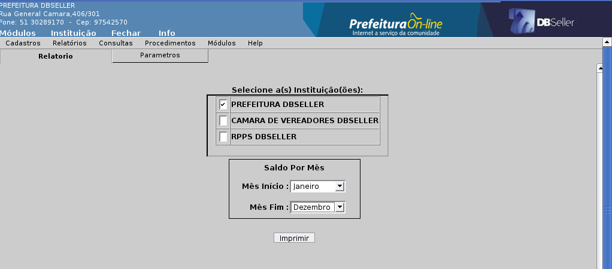
Figura
48: Tela de emissão do Anexo 17

Figura
49: Exemplo de emissão do Anexo 17.
Este demonstrativo integra o Balanço Geral do Município e é composto pela movimentação de todas as contas representativas de Despesas e Receitas de natureza extra-orçamentária. As informações estão dispostas no mesmo leiaute do Demonstração da Dívida Flutuante, sendo que para efeito deste relatório, consideram-se contas de Receitas e Despesas Extra-Orçamentárias aquelas em que sua identificação do sistema de contas estiver parametrizado com o código FINANCEIRO-EXTRA ORÇAMENTÁRIA.
Para emitir o relatório, o usuário deverá selecionar a Instituição e o intervalo de meses desejados e clicar no botão "Imprimir".
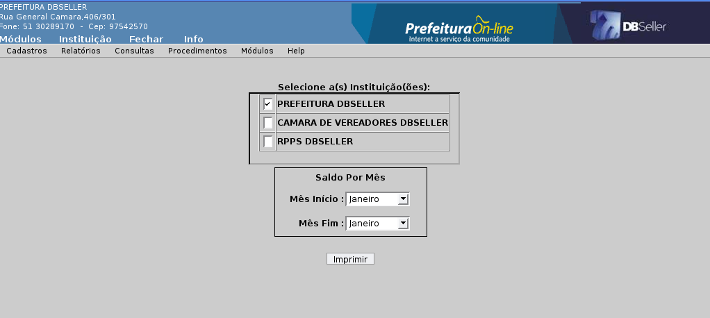
Figura
50: Tela de emissão do Demonstrativo Extraorçamentário.

Figura
51: Exemplo de emissão do Demonstrativo Extraorçamentário.
De caráter obrigatório para qualquer Pessoa Jurídica de Direito Público ou Privado. Lista todos os lançamentos contábeis em ordem cronológica.
Este relatório, parte integrante dos Relatórios Legais do DBPortal, atende a exigência legal de impressão e guarda do Livro Diário.
OPÇÕES DE
IMPRESSÃO
Instituição: O usuário poderá definir a impressão de qualquer Instituição ou, se preferir consolidar os dados, selecionar todas.
Intervalo de datas: Definição das datas inicial e final para a impressão do relatório.
Página Inicial: O Livro Diário é um demonstrativo essencialmente extenso, o que, na Contabilidade Governamental, caracteriza-se mais intensamente pela quantidade de lançamentos contábeis para cada operação. Por esta razão, é bem comum a necessidade de impressão deste relatório em períodos fragmentados. Este campo, então, tem a finalidade de manter uma seqüência de numeração de páginas mesmo que um determinado período seja impresso em mais de uma vez. Desta forma, procede-se conforme o exemplo:
Objetivo: Imprimir o relatório no mês de Janeiro em duas partes, sendo que a primeira do dia 01 até o dia 15 e a segunda do dia 16 até o dia 31.
Primeiro
relatório:
Data inicial: 01/01/2007 Data final: 15/01/2007 Página inicial: 1
Segundo
relatório:
Data inicial: 16/01/2007 Data final: 31/01/2007 Página inicial: 201 (*)
(*) Considerando-se
que o primeiro relatório tenha como resultado 200 páginas.

Figura
52 – Tela de emissão do Livro Diário.

Figura
53 – Exemplo de emissão do Livro Diário.
São relatórios de simples emissão que listam os dados constantes nos cadastros gerais do sistema e tem por finalidades básicas a consulta e conferência destas informações.
Lista o Plano de Contas. Nele estarão impressas as informações mais relevantes deste cadastro, tais como o código estrutural, a descrição, o código reduzido no caso das contas analíticas, a Instituição, Recurso e, no caso das contas bancárias, os códigos de Banco, Agência e Conta Corrente. Poderá ser emitido de forma consolidada, ou por Instituição.
O campo Estrutural tem a finalidade de filtrar um trecho do Plano, conforme o código estrutural das contas. Se, por exemplo, o usuário desejar a impressão de um Plano contendo apenas as contas de Despesa com “Material de Distribuição Gratuita”, bastará informar no campo o código “3339032” e clicar no botão Processar.

Figura
54 – Tela de emissão do relatório.

Figura
55 – Exemplo de emissão do relatório.
Lista as classificações de contas existentes no cadastro. As opções de impressão disponíveis são:
Alfabética – lista as classificações em ordem de sua descrição;
Numérica – lista as classificações ordenadas pelo seu código.

Figura
56 – Tela de emissão do relatório.

Figura
57 – Exemplo de emissão do relatório.
Lista o cadastro de sistemas de contas existente. As opções de impressão disponíveis são:
Alfabética – lista os sistemas em ordem de sua descrição;
Numérica – lista os sistemas ordenados pelo seu código.
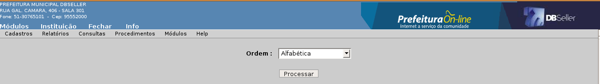
Figura
58 – Tela de emissão do relatório.
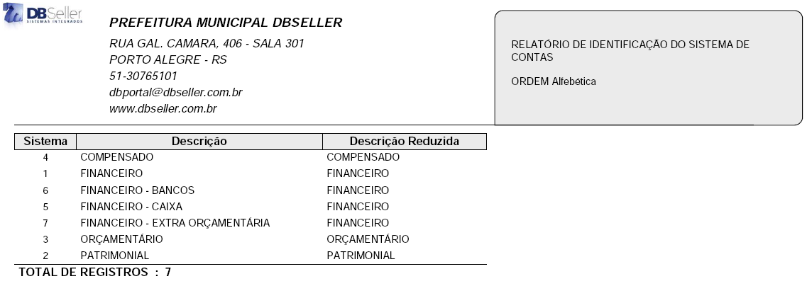
Figura
59 – Exemplo de emissão do relatório.
Lista o cadastro de documentos existente. As opções de impressão disponíveis são:
Alfabética – lista os documentos em ordem de sua descrição;
Numérica – lista os documentos ordenados pelo seu código;
Tipo – lista os documentos ordenados pelo código do tipo de lançamento.
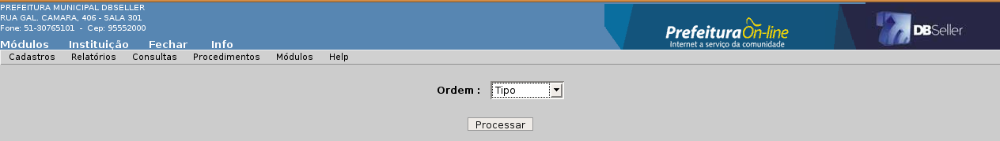
Figura
60 – Tela de emissão do relatório.

Figura 61 – Exemplo de emissão do relatório.
Demonstra a configuração definida no Cadastro de Transações para qualquer documento que faça parte dos lançamentos automáticos realizados pelo Sistema. É possível fazer a impressão dos lançamentos de um documento de cada vez. As opções de impressão são as seguintes:
Exercício – permite selecionar o exercício a que a configuração pertence;
Código – seleção do documento para o qual serão listados os lançamentos configurados.
Para listar os dados, basta clicar no botão “Gerar Relatório”.
Figura
62 – Tela de emissão do relatório.

Figura
63 – Exemplo de emissão do relatório.
Lista o cadastro de Históricos Padrão para os lançamentos contábeis. Assim como os demais relatórios de cadastro, pode ser emitido em ordem alfabética ou numérica.

Figura
64 – Tela de emissão do relatório.

Figura 65 – Exemplo de emissão do relatório.
Oferecem ao usuário a visualização estruturada de toda a Execução Contábil e Orçamentária do Ente, envolvendo Previsão e Execução, saldos e movimentação da Receita e da Despesa, bem como das demais contas financeiras e patrimoniais. Sua emissão permite diversas formas de visualização e filtros das informações, o que viabiliza extrair qualquer tipo de informação armazenada no banco de dados.
Trata-se de um balancete contábil padrão para qualquer Administração Municipal, nele estarão contidas, em sua devida ordem, todas as contas e suas informações de saldo inicial, movimentação a débito e a crédito e o Saldo final. Tem como características básicas a emissão por livre período de datas e totalmente multi-instituições, ou seja, seu usuário poderá obter tanto as informações consolidadas entre todas as entidades da administração como também de todas estas individualmente. As demais opções de impressão compreendem:
Tipo (analítico/sintético): determina se o usuário deseja imprimir o relatório de forma analítica, visualizando todas as contas disponíveis ou de forma sintética, visualizando apenas as contas em seus níveis consolidadores;
Somente contas com Movimento (SIM/NÃO): determina se o usuário deseja imprimir todas as contas existentes no seu Plano ou somente aquelas que possuem movimento contábil no intervalo de datas informado. Considera-se como movimento, para este fim, o saldo inicial da conta (maior que zero);
Emite Conta Corrente (SIM/NÃO): determina se o usuário deseja ou não imprimir junto a descrição das contas do grupo “Bancos Conta Movimento” seus dados bancários (Banco, Agência e Conta Corrente). Estas informações fazem parte do cadastro de todas as contas bancárias no Plano de Contas;
Consolidado por Estrutural (SIM/NÃO): esta opção determina se o usuário deseja ou não, em emissões consolidadas deste balancete, ver a movimentação contábil das contas detalhada em nível de código reduzido das contas de cada uma das Instituições. Lembra-se neste caso que, como o Plano de Contas do DBPortal é único para o Município e também multi-instituição, uma conta contábil pode receber um código reduzido para cada Instituição e nele receber seus lançamentos. Logo, se o balancete for emitido com esta opção selecionada como “SIM”, os valores serão impressos em seu total para cada conta contábil. Caso contrário, o balancete repetirá a impressão de cada código estruturado e detalhará os valores pelo código reduzido individual de cada uma das Instituições existentes no cadastro;
Sistema de Contas: oferece a opção de imprimir o relatório segundo a classificação pelo sistema de contas. São sistemas de contas o Orçamentário, Financeiro, Patrimonial e Compensado;
Encerramento do Exercício (SIM/NÃO): oferece a opção de imprimir ou não o balancete contemplando os lançamentos de Encerramento do Exercício;
Estrutural: através deste campo, o usuário poderá limitar a impressão do balancete a apenas um trecho definido pelo código estruturado de uma conta contábil. Esta opção é extremamente útil para os casos onde se deseja conferir ou conciliar saldos de contas, obtendo com isto uma impressão rápida e econômica, por imprimir apenas uma parte do balancete, que pode ser bem extenso, dependendo do número de contas movimentadas pela Contabilidade. Como exemplo prático, pode-se citar a impressão apenas do grupo de contas “Bens Móveis”, onde seria necessário apenas digitar neste campo a parte do código estruturado que define todo o intervalo do Plano de Contas, ou seja, “14212”.

Figura
66 – Tela de emissão do relatório.

Figura
67 – Exemplo de emissão do relatório.
Trata-se do Balancete da Despesa padrão para a Administração Municipal. Faz uma demonstração bem estruturada desde a Previsão Inicial constante na Lei Orçamentária Anual, passando pelo registro dos Créditos Adicionais, a execução da Despesa nas fases de Empenho, Liquidação e Pagamento, terminando por demonstrar os saldos gerais das verbas orçamentárias. Tem como características básicas:
Multi-Instituição: pode ser emitido consolidado entre todas as entidades da Administração ou de forma individualizada;
pode ser emitido obtendo-se dados apenas do Orçamento (para isto deve-se clicar no botão “Orçamento”) ou da Execução da Despesa (utilizar o intervalo de datas constante na opção “Balanço”).

Figura
68 – Tela de emissão do relatório.
Demais opções de impressão:
Órgão/Unidade: esta opção define, ao mesmo tempo, o agrupamento das informações no relatório e um filtro onde o usuário poderá escolher apenas um item a ter suas informações impressas. Caso seja necessário, imprimir o relatório listando a Despesa de uma determinada Secretaria ou mesmo de uma Unidade Orçamentária subordinada desta mesma, basta posicionar o campo em uma das opções (Órgão ou Unidade) e clicar no botão “Seleciona”;

Figura
69 – Exemplo da seleção de Órgãos.
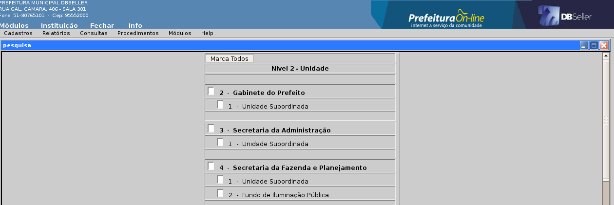
Figura
70 – Exemplo da seleção de Unidades.
Totalização: esta opção define duas formas básicas de emissão do balancete, que são:
ANALÍTICO: lista todos os dados disponíveis sobre a Previsão e Execução da Despesa, controlando movimentos e saldos de todas as dotações;
SINTÉTICO: lista apenas os níveis totalizadores, conforme a escolha do usuário na opção “Órgão/Unidade”.
Totaliza Atividade (SIM/NÃO): oferece ao usuário, na opção “ANALÍTICO”, a possibilidade de uma totalização pelo nível de Projeto/Atividade;
Recurso: permite a impressão do balancete filtrando um Recurso determinado.

Figura
71 – Impressão do Balancete na Opção
SINTÉTICO.

Figura
72 – Impressão do Balancete na Opção
ANALÍTICO
Este balancete imprime basicamente as mesmas informações do anterior. Seu diferencial, no entanto, é oferecer vantagens no sentido de pesquisar valores da Execução Orçamentária da Despesa, visto que está dotado de recursos capazes de definir:
quais as informações serão impressas;
como estas informações serão impressas e,
qual o período desejado (intervalo de datas).
O usuário define quais os dados que deseja imprimir através da aba “Filtro” (vide manual do Módulo Orçamento) e como será feita a impressão destes dados através da opção Nível, onde estarão disponíveis todos os níveis de uma Dotação Orçamentária. Para escolher um nível, basta clicar sobre ele. Para combinar níveis, basta clicar pressionando simultaneamente a tecla “Ctrl”. Os níveis combinados serão impressos sempre seguindo a hierarquia dos mesmos, ou seja, do Órgão até o Recurso.

Figura
73 – Tela de emissão do relatório.

Figura 74 – Exemplo de emissão do balancete, combinando os níveis de Função e Subfunção.
Tem por finalidade demonstrar, de forma ordenada e estruturada, os valores desde a Previsão Inicial da Receita constante na Lei Orçamentária Anual, passando pelas Previsões Adicionais originadas pelas Suplementações por Arrecadação a Maior, Auxílios e Convênios e Operações de Crédito até a execução final, pelo resultado das Arrecadações. Seguem, abaixo, todas as opções de impressão:
Recurso: permite filtrar o balancete por um determinado código de Recurso constante no Orçamento da Receita;
Impressão: define dois tipos de exibição do balancete, podendo o usuário optar por imprimir em formato de paisagem ou retrato;
Tipo de Agrupamento das Deduções: as últimas alterações da Legislação, no que se refere ao tratamento dado às Deduções da Receita, determinaram uma mudança no código estruturado destas contas, onde a Classe (primeiro dígito do código) deixou de ser “4” e passou a ser “9”, ficando o restante da estrutura idêntica a conta de Receita original. Diante disso, foram criadas três formas de impressão do balancete baseadas no trato dado às deduções:
Lista Deduções Grupo 9: o balancete é emitido obedecendo a ordem da classe das contas e as deduções ficam impressas no final do relatório;
Não Imprime as Deduções: as contas de dedução não são impressas. Neste caso, baseado na regra que torna idêntica toda a estrutura da conta de Receita original e sua respectiva conta de dedução a partir da classe, o Sistema aglutina as informações e todas as Receitas que tiverem previstas deduções são demonstradas pelo seu valor líquido, da Previsão a Execução.
Deduções no Mesmo Grupo: o balancete ignora o ordenamento pela classe e imprime as Deduções da Receita logo abaixo de sua Receita original.
Balanço: imprime o balancete segundo intervalo de datas definido pelo usuário, demonstrando valores da Execução Orçamentária da Receita do exercício vigente;
Orçamento: realiza a impressão demonstrando apenas os valores previstos na Lei Orçamentária Anual para o exercício vigente.

Figura
75 – Tela de emissão do balancete.

Figura 76 – Exemplo de emissão do balancete, segundo as opções da Figura anterior.
Esta é uma versão do Balancete da Receita que lista basicamente os mesmos valores que o anterior. A diferença reside apenas na exibição dos dados onde a impressão se efetiva de forma resumida, agrupada e totalizada pelos códigos de Recurso Vinculado.
As opções de impressão se resumem na seleção dos períodos, de forma análoga ao Balancete da Receita.
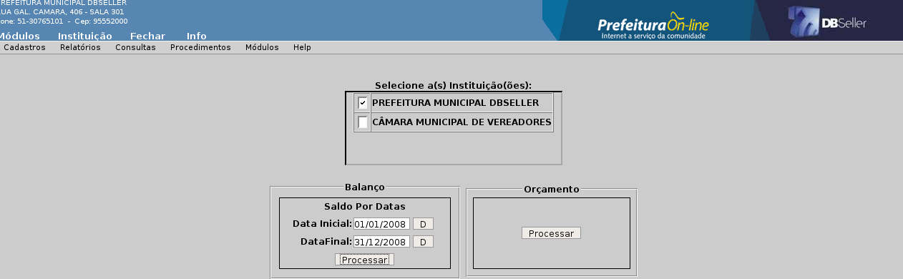
Figura
77 – Tela de emissão do balancete.
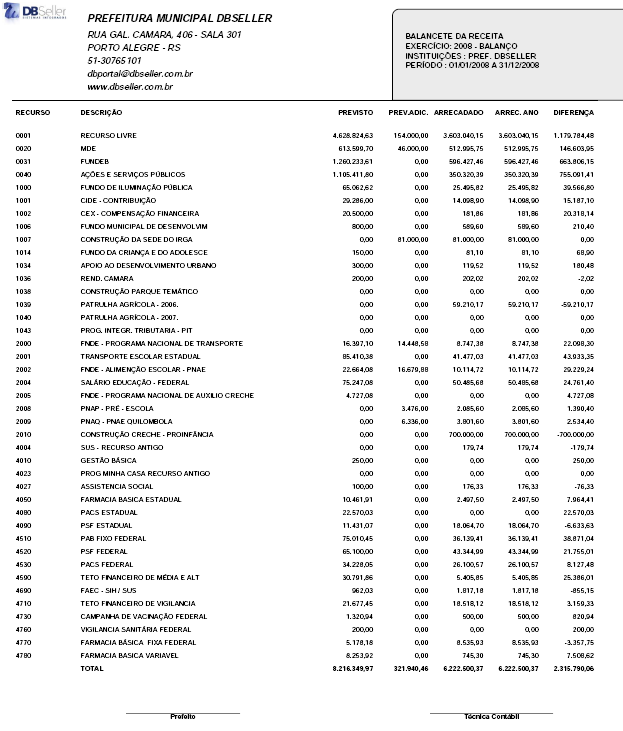
Figura 78 – Exemplo de emissão do balancete.
Emite o Balancete em formato “texto.CSV”, possibilitando trabalhar com os dados da Receita Orçamentária utilizando planilhas eletrônicas (MS-Excel ou Openoffice). Tem as mesmas opções de impressão no tocante às datas ou mesmo apenas os dados do Orçamento e possibilita o filtro pelo código de Recurso Vinculado.
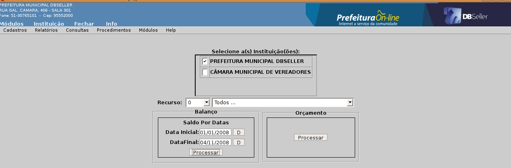
Figura
79 – Tela de emissão do balancete.

Figura
80 – Demonstração do link para download do
balancete, exportando para Planilha Eletrônica.
Oferece a mesma funcionalidade de emitir o balancete exportando seus dados em formato “texto.CSV” para Planilhas Eletrônicas.
As opções de impressão são análogas ao Balancete da Despesa original e a forma de abrir os dados nas Planilhas, depois de gerar o relatório, é idêntica a demonstrada na Figura 80.
Este relatório objetiva a demonstração resumida dos valores da receita arrecadada, despesa empenhada, despesa liquidada, receita e despesa extra-orçamentária executadas, déficit ou superávit, despesa orçamentária paga, restos a pagar pagos e o total pago das duas despesas, podendo ser utilizado o filtro de mês inicial e final, o déficit ou superávit baseado no despesa empenhada ou liquidada, utilizar quebra de recurso e considerar ou não a receita e despesa extra-orçamentária.

Figura
81 – Tela de emissão do relatório.

Figura
82 – Exemplo de emissão do relatório.
Este relatório demonstra os valores, filtrados por código do recurso, podendo ser filtrado um recurso por vez ou mais de um, de Saldo de banco conforme o boletim de caixa, restos a pagar a ser pagos, somando os processados e os não processados, saldo de empenhos a pagar conforme o balancete da despesa, valores do grupo depósitos, extra-orçamentários a pagar, saldo da despesa comprometido, ou seja, os valores de despesa reservados , menos as reservas efetuadas por licitações, saldo de licitação comprometido, empenhos não liquidados a pagar, a receita prevista para o ano e o arrecadado até a data e a diferença por arrecadar.

Figura
83 – Tela de emissão do relatório.

Figura
84 – Exemplo de emissão do relatório.
Este relatório demonstra o saldo de verbas disponível, que poderá ser utilizado para empenho ou até mesmo reserva de saldo para posterior empenho ou anulação de reserva. Podem ser utilizados os filtros desde órgão até o recurso, trocando de página ou não, por órgão e unidade, listando ou não os sub-elementos (desdobramentos) dentro de um intervalo inicial a intervalo final. Ao termino da parametrização basta clicar no botão processar para emitir o relatório.
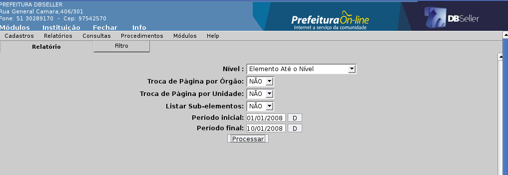
Figura
85 – Tela de emissão do relatório.

Figura
86 – Exemplo de emissão do relatório.
O relatório demonstra a despesa empenhada, liquidada ou paga, podendo ser utilizado o filtro por órgão ou unidade, agrupando ou não, totalizando de modo geral ou por função, subfunção, programa, projeto/atividade ou elemento, clicando, ao final da escolha dos filtros, no botão gerar relatório, para emitir o mesmo.

Figura
87 – Tela de emissão do relatório.
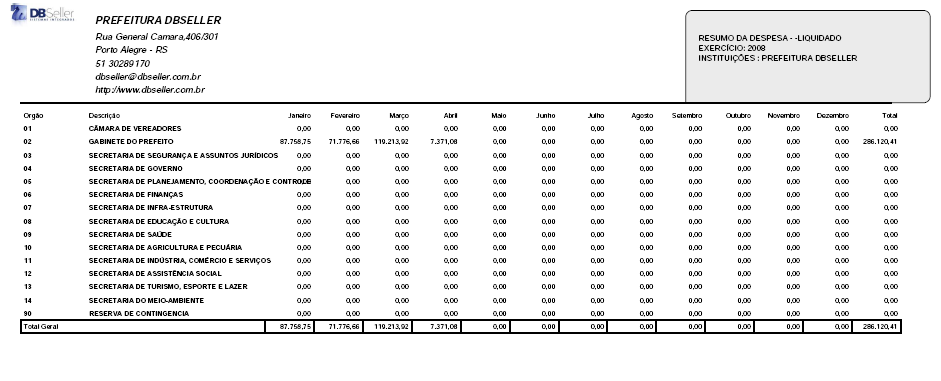
Figura
88 – Exemplo de emissão do relatório.
É um relatório que demonstra por órgão os valores de dotação inicial, suplementado, reduzido, o total do saldo restante, o empenhado, o percentual em relação ao saldo total, e o saldo final disponível, podendo ser totalizado no formato geral ou por função, subfunção, programa, projeto/atividade e operações especiais, com os valores empenhado, liquidado ou pago.

Figura
89 – Tela de emissão do relatório.
Este relatório tem por objetivo proporcionar ao Administrador a visualização, de forma clara e simplificada, a Demonstração do Índice Constitucional da Educação. Para efeito de acompanhamento, oferece como vantagens:
utilização da mesma metodologia de cálculo adotada pelo TCE-RS, através do Programa Autenticador de Dados, o PAD;
possibilidade de calcular o índice computando os gastos com Educação com base na Despesa Orçamentária Empenhada ou Paga, além da Liquidada (fase da despesa que determina o índice legal);
possibilidade de ter disponível a qualquer momento a apuração do índice da Educação encerrado em qualquer data, não mais dependendo do cálculo feito pelo PAD. Isto possibilitará a tomada de ações preventivas, conforme os índices apurados.
Este relatório tem seu funcionamento configurável, tendo o usuário responsável pela Contabilidade a possibilidade de dar a devida manutenção sempre que necessário. Isto poderá ser feito através da configuração dos Parâmetros e Variáveis de Relatórios, um procedimento que será devidamente detalhado separadamente em apêndice próprio deste Manual.
Assim como seu leiaute e seus dados, este relatório tem uma forma de emissão extremamente simplificada, bastando ao usuário escolher a fase da despesa pela qual deseja calcular o índice e, a data desejada.
O relatório será impresso com um clique no botão "Processar".

Figura
90 – Tela de emissão do relatório.

Figura
91 – Exemplo de emissão do relatório.
Este relatório tem por objetivo proporcionar ao Administrador a visualização, de forma clara e simplificada, a Demonstração do Índice Constitucional da Saúde. Para efeito de acompanhamento, oferece como vantagens:
utilização da mesma metodologia de cálculo adotada pelo TCE-RS, através do Programa Autenticador de Dados, o PAD:
possibilidade de calcular o índice computando os gastos com Saúde com base na Despesa Orçamentária Empenhada ou Paga, além da Liquidada (fase da despesa que determina o índice legal);
possibilidade de ter disponível a qualquer momento a apuração do índice da Saúde encerrado em qualquer data, não mais dependendo do cálculo feito pelo PAD. Isto possibilitará a tomada de ações preventivas, conforme os índices apurados.
Este relatório tem seu funcionamento configurável, tendo o usuário responsável pela Contabilidade a possibilidade de dar a devida manutenção sempre que necessário. Isto poderá ser feito através da configuração dos Parâmetros e Variáveis dos Relatórios.
Assim como seu leiaute e seus dados, este relatório tem uma forma de emissão extremamente simplificada, bastando ao usuário escolher:
a fase da despesa pela qual deseja calcular o índice e,
a data desejada.
O relatório será impresso com um clique no botão "Processar".

Figura
92 – Tela de emissão do relatório.

Figura
93 – Exemplo de emissão do relatório.
Pode-se definir o Razão por Despesa como um extrato de uma ou mais dotações orçamentárias, listando em um determinado intervalo de datas, todas as movimentações correspondentes às verbas selecionadas pelo usuário. Para imprimir o relatório, estão disponíveis as seguintes opções:
Seleção da Dotação: Uma ou mais dotações podem ser selecionados para efeito deste relatório. Para isto, basta informar seu código reduzido ou clicar no link para ter mais opções de pesquisa.
Seleção de Recursos: Para efeito deste relatório. é permitido o filtro das informações pela vinculação do Recurso Orçamentário. A seleção está disponível em uma aba separada das demais opções e poderá ser feita de forma análoga a seleção das dotações, bastando informar o código ou clicar no link para ter mais opções de pesquisa.
Período: Informar o intervalo de datas desejado.
Tipo: O usuário terá a opção de imprimir um relatório ANALÍTICO, onde serão listados todos os lançamentos contábeis da dotação selecionada contendo o detalhamento de todas as suas seqüências ou SINTÉTICO onde serão impressos de forma mais "limpa" as informações como o estrutural e descrição do elemento de despesa da dotação, o código e data do lançamento, o código e descrição do Documento e o valor.
Ao final da impressão, será listado um resumo com o somatório dos valores agrupados pelo Documento.

Figura
94 – Tela de emissão do relatório.
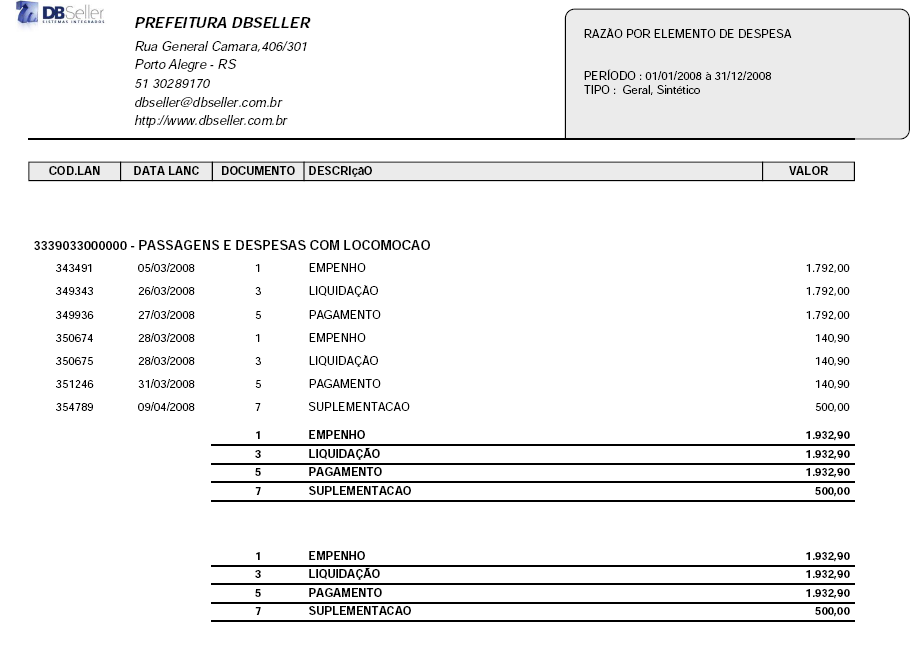
Figura
95 – Exemplo de emissão do relatório.
Tem por finalidade demonstrar os lançamentos contábeis vinculados a uma ou mais receitas orçamentárias. Para imprimir o relatório, estão disponíveis as seguintes opções:
Seleção da Receita: Uma ou mais receitas podem ser selecionados para efeito deste relatório. Para isto, basta informar seu código reduzido ou clicar no link para ter mais opções de pesquisa.
Seleção de Recursos: Para efeito deste relatório. é permitido o filtro das informações pela vinculação do Recurso Orçamentário. A seleção está disponível em uma aba separada das demais opções e poderá ser feita de forma análoga a seleção das receitas, bastando informar o código ou clicar no link para ter mais opções de pesquisa.
Período: Informar o intervalo de datas desejado.
Tipo: O usuário terá a opção de imprimir um relatório Analítico, onde serão listados todos os lançamentos contábeis da receita selecionada contendo o detalhamento de todas as suas seqüências ou Sintético onde serão impressos de forma mais "limpa" as informações como o estrutural e descrição da fonte de receita, o código e data do lançamento, o código e descrição do Documento e o valor.
Ao final da impressão, será listado um resumo com o somatório dos valores agrupados pelo Documento.

Figura
96 – Tela de emissão do relatório.
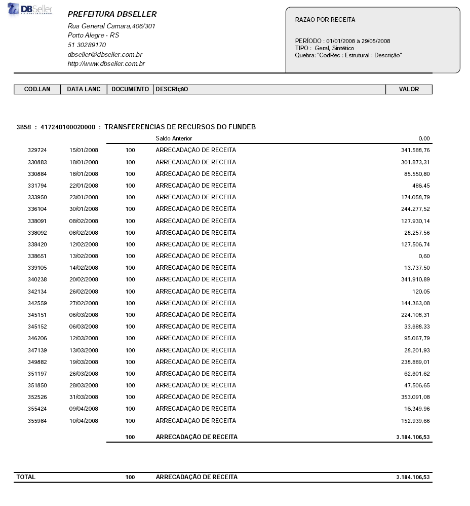
Figura
97 – Exemplo de emissão do relatório.
É genuinamente o Livro Razão que dispõe o DBPortal.
Nele, o usuário terá basicamente, para cada conta contábil cadastrada no Plano de Contas a impressão:
do Saldo Anterior à data inicial selecionada;
da Movimentação a Débito ou a Crédito de uma ou mais contas dentro do período selecionado e,
do Saldo Final da movimentação para a(s) conta(s) selecionada(s).
As informações impressas para cada Lançamento Contábil constante na movimentação para a(s) conta(s) selecionada(s), serão:
o código e a seqüência do lançamento;
a data do lançamento;
o código da receita no Orçamento no caso de arrecadações de receita Orçamentária;
o código da dotação orçamentária e do EMPENHO no caso de lançamentos contábeis resultantes da Execução Orçamentária da Despesa;
o código da suplementação no caso de lançamentos contábeis originados pela execução de Créditos Adicionais no Orçamento;
a descrição do documento, ou seja, a descrição do evento contábil associado ao lançamento constante no Cadastro de Documentos;
o valor a débito ou a crédito do lançamento;
a contrapartida da conta solicitada para a impressão do Razão e,
o histórico do lançamento.
Demais opções de impressão:
Seleção da Conta: permite selecionar uma ou mais contas para a impressão do Razão. Caso não houver informação da conta contábil o razão será impresso com todas as Contas do Exercício.
Período: define o intervalo de datas em que o relatório imprimirá as informações.
Tipo de documento: permite ao usuário filtrar as informações a serem impressas no razão pelo Documento. Deste modo, por exemplo, o usuário poderá optar por imprimir os movimentos de uma determinada conta bancária que tenham como evento uma ARRECADAÇÃO DE RECEITA.
Imprime Contrapartida: define se o relatório informará ou não a contrapartida da conta selecionada em cada lançamento contábil. Se este campo estiver desmarcado, o razão não imprimirá esta informação.
Imprime saldo por dia: define se o relatório totalizará a movimentação e o saldo das contas por dia. Se este campo estiver marcado, o razão irá imprimir a totalização a cada troca de datas da movimentação, caso contrário, a totalização será impressa somente no final do demonstrativo.

Figura
98 – Tela de emissão do relatório.

Figura
99 – Exemplo de emissão do relatório.
São os que compõem o Relatório Resumido da Execução Orçamentária e o Relatório da Gestão Fiscal. Sua finalidade anexos e é atender a publicação das informações observando as especificações e prazos definidos pela Lei Complementar 101/2000, a Lei de Responsabilidade Fiscal. A STN edita e publica, através de Portarias, os Manuais de Elaboração do RREO e do RGF, que dão todas as instruções para a emissão e configuração dos Anexos. Estes relatórios, além de publicados, devem ser a fonte dos dados para a informação em meio eletrônico, através do Procedimento de Coleta de Dados, feito pela Caixa Econômica Federal, o SISTN.
O Balanço Orçamentário, definido na Lei nº 4.320, de 31 de março de 1964, demonstrará as receitas e despesas previstas em confronto com as realizadas. Esse balanço também está previsto na Lei de Responsabilidade Fiscal – LRF, porém de forma mais detalhada e com periodicidade de publicação bimestral. Integra o Relatório Resumido da Execução Orçamentária, e deverá ser publicado até trinta dias após o encerramento de cada bimestre. Segundo a LRF, o Balanço Orçamentário apresentará as receitas, detalhadas por categoria econômica, subcategoria econômica e fonte (destacando as receitas intra-orçamentárias), especificando a previsão inicial, a previsão atualizada para o exercício, a receita realizada no bimestre atual, a realizada até o bimestre atual e o saldo a realizar, bem como as despesas, por categoria econômica e grupo de natureza da despesa (destacando as despesas intra-orçamentárias), discriminando a dotação inicial, os créditos adicionais, a dotação atualizada para o exercício, as despesas empenhadas no bimestre atual e até o bimestre atual, as despesas liquidadas no bimestre atual e até o bimestre atual, e o saldo a liquidar. Para permitir maior transparência por meio da apuração líquida e total das receitas e despesas, estas deverão ser apresentadas neste demonstrativo segregadas em:
a) receitas orçamentárias líquidas das intra-orçamentárias;
b) receitas intra-orçamentárias;
c) despesas orçamentárias líquidas das intra-orçamentárias;
d) despesas intra-orçamentárias.
Este Demonstrativo tem suas informações configuráveis podendo o usuário (Responsável pela Contabilidade) dar a devida manutenção através da configuração dos “Parâmetros e Variáveis dos Relatórios”.
Para emitir o Demonstrativo, basta ao usuário selecionar a Instituição e período desejados e clicar no botão "Imprimir".

Figura
100 – Tela de emissão do relatório.


Figura
101 – Exemplo de emissão do relatório.
O Demonstrativo da Execução das Despesas por Função/Subfunção integra o Relatório Resumido da Execução Orçamentária, e deverá ser publicado até trinta dias após o encerra mento de cada bimestre. A função expressa o maior nível de agregação das ações da administração pública, nas diversas áreas de despesa que competem ao setor público. A subfunção representa uma partição da função, visando a agregar determinado subconjunto de despesa do setor público. As subfunções poderão ser combinadas com funções diferentes daquelas a que estejam vinculadas. Este demonstrativo deverá conter cada função, detalhada por subfunções, cuja combinação pode ser típica, que representa subfunções diretamente ligadas à função, e atípicas, quando a subfunção de uma determinada função é utilizada por outra. Na elaboração deste demonstrativo, a União, os Estados, o Distrito Federal e os Municípios deverão observar a Portaria nº 42, de 14 de abril de 1999, do então Ministério de Orçamento e Gestão, a qual atualiza a discriminação da despesa por função e subfunção e determina que se aplique aos orçamentos da União, Estados, Distrito Federal e Municípios, a estrutura em nível de funções e subfunções.
Esse procedimento visa à harmonização da prestação de contas e dos relatórios e demonstrativos, conforme artigo 67, inciso III, da LRF, deixando para os Estados, Distrito Federal e Municípios estabelecerem, em atos próprios, suas estruturas de programas, códigos e identificação, respeitados os conceitos e determinações da Portaria nº 42/1999.
Para permitir maior transparência por meio da apuração líquida e total das despesas, estas deverão ser apresentadas neste demonstrativo segregadas em:
a) despesas orçamentárias líquidas das intra-orçamentárias;
b) despesas intra-orçamentárias.
Este Demonstrativo tem suas informações configuráveis podendo o usuário (Responsável pela Contabilidade) dar a devida manutenção através da configuração dos “Parâmetros e Variáveis dos Relatórios”.
Para emitir o Demonstrativo, basta ao usuário selecionar a Instituição e período desejados e clicar no botão "Imprimir".

Figura 102 – Tela de emissão do relatório.

Figura 103 – Exemplo de emissão do relatório.
Este demonstrativo apresenta a apuração da Receita Corrente Líquida – RCL, sua evolução nos últimos doze meses e a previsão de seu desempenho no exercício. A informação constante desse demonstrativo serve de base de cálculo para os limites estabelecidos pela Lei de Responsabilidade Fiscal, apresentados no Relatório de Gestão Fiscal. Receita Corrente Líquida é o somatório das receitas tributárias, de contribuições, patrimoniais, agropecuárias, industriais, de serviços, transferências correntes e outras receitas correntes, consideradas algumas deduções. As receitas intra-orçamentárias não devem ser consideradas na apuração da Receita Corrente Líquida conforme determinação do § 3º do art. 2º de excluir as duplicidades.
Este Demonstrativo tem suas informações configuráveis podendo o usuário (Responsável pela Contabilidade) dar a devida manutenção através da configuração dos “Parâmetros e Variáveis dos Relatórios”.
Para emitir o Demonstrativo, basta ao usuário selecionar a Instituição e período desejados e clicar no botão "Imprimir".

Figura
104 – Tela de emissão do relatório.

Figura 105 – Exemplo de emissão do relatório.
Esse demonstrativo tem a finalidade de assegurar a transparência das receitas e despesas previdenciárias do regime próprio dos servidores públicos, que o ente da Federação mantiver ou vier a instituir ele integra o Relatório Resumido da Execução Orçamentária e deverá ser publicado até trinta dias após o encerramento de cada bimestre. O ente da Federação que mantiver ou vier a instituir regime próprio de previdência social, para seus servidores, conferir-lhe-á caráter contributivo e o organizará com base em normas de contabilidade e atuária que preservem seu equilíbrio financeiro e atuarial, em conformidade com o Manual de Contabilidade Aplicado aos Regimes Próprios de Previdência Social, publicado pelo Ministério da Previdência Social.
A institucionalização do Regime Próprio de Previdência Social implica em estabelecer contabilidade própria para permitir conhecer, a qualquer momento, a situação econômica, financeira e orçamentária do patrimônio, que é propriedade dos beneficiários da previdência.
Para permitir maior transparência por meio da apuração líquida e total das receitas e despesas, estas deverão ser apresentadas neste demonstrativo segregadas em:
a) receitas orçamentárias líquidas das intra-orçamentárias;
b) receitas intra-orçamentárias;
c) despesas orçamentárias líquidas das intra-orçamentárias;
d) despesas intra-orçamentárias.
Este Demonstrativo tem suas informações configuráveis podendo o usuário (Responsável pela Contabilidade) dar a devida manutenção através da configuração dos “Parâmetros e Variáveis dos Relatórios”.
Para emitir o Demonstrativo, basta ao usuário selecionar a Instituição e período desejados e clicar no botão "Imprimir".

Figura 106 – Tela de emissão do relatório.


Figura
107 – Exemplo de emissão do relatório.
O objetivo da apuração do Resultado Nominal é medir a evolução da Dívida Fiscal Líquida. No bimestre, o resultado nominal representa a diferença entre o saldo da dívida fiscal líquida ao final do bimestre de referência e o saldo ao final do bimestre anterior. No exercício, o resultado nominal representa a diferença entre o saldo da dívida fiscal líquida acumulada até o final do bimestre de referência e o saldo em 31 de dezembro do exercício anterior ao de referência.
Esse demonstrativo integra o Relatório Resumido da Execução Orçamentária e deverá ser publicado até trinta dias após o encerramento de cada bimestre.
Este Demonstrativo tem suas informações configuráveis podendo o usuário (Responsável pela Contabilidade) dar a devida manutenção através da configuração dos “Parâmetros e Variáveis dos Relatórios”.
Para emitir o Demonstrativo, basta ao usuário selecionar a Instituição e período desejados e clicar no botão "Imprimir".

Figura
108 – Tela de emissão do relatório.

Figura
109 – Exemplo de emissão do relatório.
O resultado primário representa a diferença entre as receitas e as despesas primárias. Sua apuração fornece uma melhor avaliação do impacto da política fiscal em execução pelo ente da Federação. Superávits primários, que são direcionados para o pagamento de serviços da dívida, contribuem para a redução do estoque total da dívida líquida. Em contrapartida, déficits primários indicam a parcela do aumento da dívida, resultante do financiamento de gastos não-financeiros que ultrapassam as receitas não-financeiras.
Esse demonstrativo integra o Relatório Resumido da Execução Orçamentária e deverá ser publicado até trinta dias após o encerramento de cada bimestre.
Se verificado, ao final de um bimestre, que a realização da receita poderá não comportar o cumprimento das metas de resultado primário ou nominal estabelecidas no Anexo de Metas Fiscais, os Poderes promoverão, por ato próprio e nos montantes necessários, nos trinta dias subseqüentes, limitação de empenho e movimentação financeira, segundo os critérios fixados pela Lei de Diretrizes Orçamentárias.
Para fins de apuração do Resultado Primário, deverão ser computadas todas as receitas e despesas, incluindo as intra-orçamentárias. Contudo, nesse demonstrativo, não é necessário segregar as receitas e despesas intra-orçamentárias das outras receitas e despesas.
Este Demonstrativo tem suas informações configuráveis podendo o usuário (Responsável pela Contabilidade) dar a devida manutenção através da configuração dos “Parâmetros e Variáveis dos Relatórios”.
Para emitir o Demonstrativo, basta ao usuário selecionar a Instituição e período desejados e clicar no botão "Imprimir".

Figura
110 – Tela de emissão do relatório.

Figura
111 – Exemplo de emissão do relatório.
O Demonstrativo das Receitas e Despesas com Manutenção e Desenvolvimento do Ensino apresenta os recursos públicos destinados à educação provenientes da receita resultante de impostos e das receitas vinculadas ao ensino, as despesas com a manutenção e desenvolvimento do ensino por vinculação de receita, os acréscimos ou decréscimos nas transferências do Fundo de Manutenção e Desenvolvimento da Educação Básica e de Valorização dos Profissionais da Educação – FUNDEB, o cumprimento dos limites constitucionais e outras informações para controle financeiro.
Esse demonstrativo integra o Relatório Resumido da Execução Orçamentária e deverá ser publicado até trinta dias após o encerramento de cada bimestre.
Este Demonstrativo tem suas informações configuráveis podendo o usuário (Responsável pela Contabilidade) dar a devida manutenção através da configuração dos “Parâmetros e Variáveis dos Relatórios”.
Para emitir o Demonstrativo, basta ao usuário selecionar a Instituição e período desejados e clicar no botão "Imprimir".
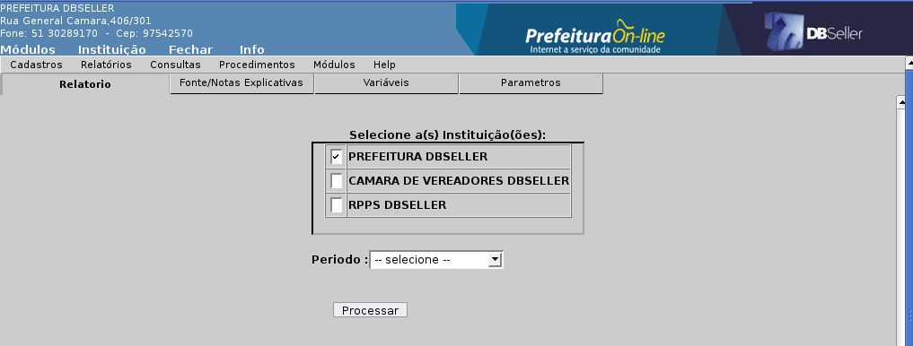
Figura
112 – Tela de emissão do relatório.


Figura
113 – Exemplo de emissão do relatório.
O Demonstrativo dos Restos a Pagar por Poder e Órgão apresenta os valores inscritos, pagos e a pagar. Este demonstrativo integra o Relatório Resumido da Execução Orçamentária e possibilita o acompanhamento efetivo dos Restos a Pagar, devendo ser publicado até trinta dias após o encerramento de cada bimestre. Para permitir maior transparência por meio da apuração líquida e total dos restos a pagar, estes serão apresentados neste demonstrativo segregados em:
restos a pagar líquidos dos restos a pagar referentes a despesas intra-orçamentárias;
restos a pagar referentes a despesas intra-orçamentárias.
Este Demonstrativo tem suas informações configuráveis podendo o usuário (Responsável pela Contabilidade) dar a devida manutenção através da configuração dos “Parâmetros e Variáveis dos Relatórios”.
Para emitir o Demonstrativo, basta ao usuário selecionar a Instituição e período desejados e clicar no botão "Imprimir".

Figura
114 – Tela de emissão do relatório.

Figura
115 – Exemplo de emissão do relatório.
O Demonstrativo da Receita de Impostos Líquida das Despesas Próprias com Ações e Serviços Públicos de Saúde, aplicado aos Estados, ao Distrito Federal e aos Municípios, apresenta a receita de impostos líquida e as transferências constitucionais e legais; as despesas com saúde por grupo de natureza da despesa e por subfunção; as transferências de recursos do Sistema Único de Saúde – SUS, provenientes de outros entes federados, e a participação das despesas com saúde na receita de impostos líquida e transferências constitucionais e legais, com a finalidade de demonstrar o cumprimento da aplicação dos recursos mínimos, nas ações e serviços públicos de saúde de acesso universal, previstos na Constituição Federal.
Este Demonstrativo tem suas informações configuráveis podendo o usuário (Responsável pela Contabilidade) dar a devida manutenção através da configuração dos “Parâmetros e Variáveis dos Relatórios”.
Para emitir o Demonstrativo, basta ao usuário selecionar a Instituição e período desejados e clicar no botão "Imprimir".

Figura
116 – Tela de emissão do relatório.
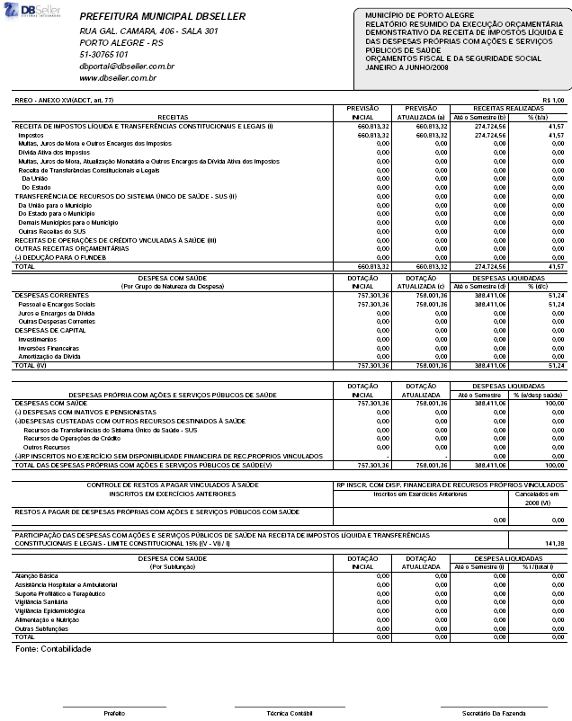
Figura 117 – Visão do leiaute do relatório.
O ente deverá publicar como um instrumento de transparência da gestão fiscal o Demonstrativo Simplificado do Relatório Resumido da Execução Orçamentária. Este demonstrativo visa evidenciar de forma simplificada, e em um único demonstrativo, as informações dos demonstrativos completos que compõem o Relatório Resumido da Execução Orçamentária.
A emissão deste relatório é feita mediante a informação do período, obedecendo os padrões adotados para os Demonstrativos do RREO. Permite-se ainda a escolha de quais demonstrativos se deseja incluir na impressão. Todos os anexos estão listados no formulário (figura 118) no padrão “Sim”. Caso haja algum deles que, porventura não se queira emitir, basta trocar a opção para “Não”. Um clique no botão “Imprimir” efetiva a emissão do relatório.
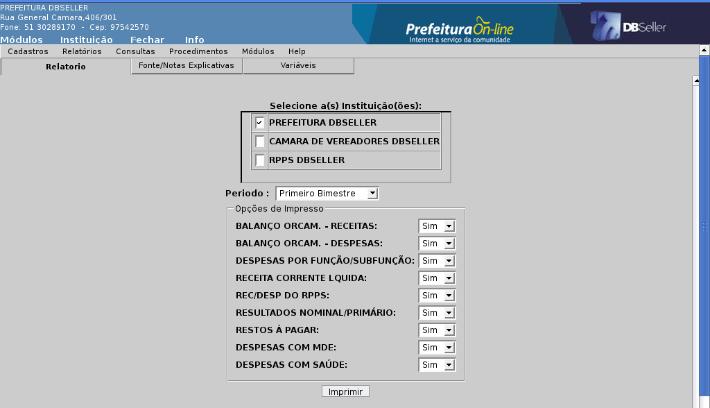
Figura
118 – Tela de emissão do relatório.
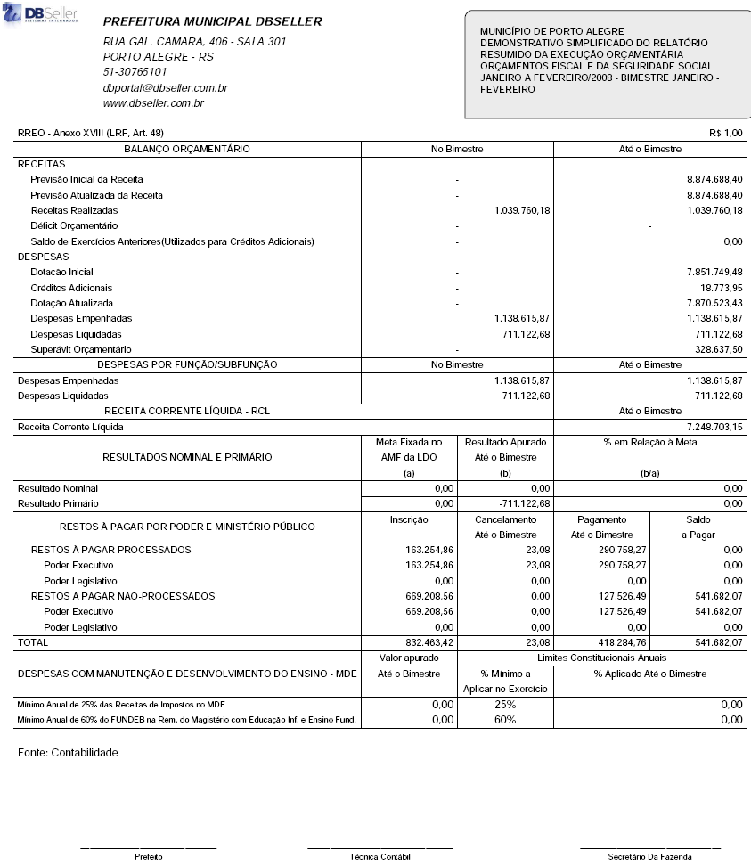
Figura
119 – Exemplo de emissão do relatório.
São os anexos que compõem o Relatório da Gestão Fiscal. Sua finalidade é atender a publicação das informações observando as especificações e prazos definidos pela Lei Complementar 101/2000, a Lei de Responsabilidade Fiscal. A STN edita e publica, através de Portarias, os Manuais de Elaboração do RGF, que dão todas as instruções para a emissão e configuração dos Anexos.
O Demonstrativo da Despesa com Pessoal, é parte integrante do Relatório de Gestão Fiscal fundamentado pelo Art. 55, Inciso I, alínea "a", da LRF. No DBPortal, compõe o rol dos Relatórios Legais. Visa assegurar a transparência dos gastos com pessoal dos Poderes e Órgãos do ente público, não podendo exceder os limites percentuais de que trata o Art. 19 da LRF, calculados sobre a RCL, apurados no Demonstrativo da Receita Corrente Líquida.
Este Demonstrativo tem suas informações configuráveis podendo o usuário (Responsável pela Contabilidade) dar a devida manutenção através da configuração dos “Parâmetros e Variáveis dos Relatórios”.
Para emitir o Demonstrativo, basta ao usuário selecionar a Instituição e período desejados e clicar no botão "Imprimir".

Figura
120 – Tela de emissão do relatório.

Figura 121 – Exemplo de emissão do relatório.
O Demonstrativo da Dívida Consolidada Líquida – DCL é parte integrante do Relatório de Gestão Fiscal, com fundamentação legal na LRF Art. 55, inciso I, alínea “b”, e Resolução nº 40/2001, do SF, Art. 1º, §1º, inciso V. O detalhamento, a forma e a metodologia de apuração da DCL visam assegurar a transparência das obrigações contraídas pelos entes da Federação e verificar os limites de endividamento de que trata a lei e outras informações relevantes. A Dívida Consolidada – DC ou fundada é o montante total, apurado sem duplicidade, das obrigações financeiras do ente da Federação, assumidas em virtude de leis, contratos, convênios ou tratados e da realização de operações de crédito, para amortização em prazo superior a doze meses, nos termos do Art. 29 da LRF. Este demonstrativo visa assegurar a transparência das obrigações contraídas pelos entes da Federação e verificar os limites de endividamento de que trata a LRF. Para todos os fins, o conceito de endividamento utilizado na apuração dos respectivos limites, com base no Demonstrativo da Receita Corrente Líquida deverá ser o da Dívida Consolidada Líquida.
Este Demonstrativo tem suas informações configuráveis podendo o usuário (Responsável pela Contabilidade) dar a devida manutenção através da configuração dos “Parâmetros e Variáveis de Relatórios”.
Para emitir o Demonstrativo, basta ao usuário selecionar a Instituição e período desejados e clicar no botão "Imprimir".

Figura
122 – Tela de emissão do relatório.

Figura
123 – Exemplo de emissão do relatório.
No DBPortal, compõe o rol dos Relatórios Legais e tem fundamentação Legal na LRF, Art. 55, inciso I, alínea "c" e Art. 40, § 1º. "O Demonstrativo das Garantias e Contragarantias de Valores, parte integrante do Relatório de Gestão Fiscal, é elaborado pelo Poder Executivo e abrange as Garantias e Contragarantias de Valores, prestadas a terceiros, de cada ente da respectiva esfera de governo Federal, Estadual ou Municipal.
Estes limites são calculados com base em percentual aplicado sobre a RCL, apurada no DEMONSTRATIVO DA RECEITA CORRENTE LÍQUIDA.
Este Demonstrativo tem suas informações configuráveis podendo o usuário (Responsável pela contabilidade) dar a devida manutenção através da configuração dos “Parâmetros e Variáveis de Relatórios”.
Para emitir o Demonstrativo, basta ao usuário selecionar a Instituição e período desejados e clicar no botão "Imprimir".

Figura
124 – Tela de emissão do relatório.

Figura 125 – Exemplo de emissão do relatório.
O Demonstrativo das Operações de Crédito, é parte integrante do Relatório de Gestão Fiscal fundamentado pelo Art. 55, Inciso I, alínea "d", da LRF. No DBPortal, compõe o rol dos Relatórios Legais.
Este Demonstrativo tem como diferença em relação aos demais Anexos do RGF a aba “Preenchimento”, que disponibiliza um formulário onde o usuário fará a digitação de todas as Operações de Crédito. As Operações previstas no relatório são:
Operações de Crédito Internas;
Operações de Crédito Externas e,
Operações de Crédito por Antecipação de Receita.
Para cada uma destas Operações, serão disponibilizados os seguintes campos para preenchimento:
Ident. da Op. de Crédito: refere-se a identificação da Operação de Crédito, onde o usuário deverá digitar de forma resumida um nome que a identifique;
Credor: digitar o nome do Credor da Operação de Crédito;
Período: informar o período para a informação digitada. Os períodos disponíveis são os Quadrimestres e os Semestres do ano;
Valor: digitar o valor da Operação de Crédito.
Preenchidos os campos, um clique no botão “Incluir” adiciona um registro. Para alterar ou mesmo excluir um registro, basta clicar, na coluna “Opções”, sobre os links “A” (alterar) ou “E” (excluir). O botão “Novo” retorna ao modo de inclusão.

Figura
126 – Exemplo da inclusão de uma Operação
de Crédito.
Na aba “Variáveis”, para efeito deste relatório, tem a finalidade de informar os percentuais dos limites definidos por Resolução do Senado Federal para as Operações de Crédito Internas e Externas e para as Operações de Crédito por Antecipação de Receita. Os campos para preenchimento são os seguintes:
Variável do relatório: escolher entre as opções “PERCENTUAL LIMITE SENADO FEDERAL OPERAÇÕES DE CRÉDITO INTERNAS E EXTERNAS” ou “PERCENTUAL LIMITE SENADO FEDERAL OPERAÇÕES DE CRÉDITO POR ANTECIPAÇÃO DA RECEITA”;
Informação da variável: digitar o percentual aplicável ao Município para cada uma das opções do item anterior;
Período: informar o período para a informação digitada. Os períodos disponíveis são os Quadrimestres e os Semestres do ano.

Figura
127 – Visão da tela de informação das
variáveis do Demonstrativo.
Preenchidos os campos, um clique no botão “Incluir” adiciona um registro. Para alterar ou mesmo excluir um registro, basta clicar, na coluna “Opções”, sobre os links “A” (alterar) ou “E” (excluir).
Feitas todas as configurações, o relatório está preparado para a impressão. Seu formulário é exatamente igual aos demais Anexos do RGF, onde o usuário determinará as Instituições, o período e efetiva a impressão clicando no botão “Imprimir”.

Figura
128 – Exemplo de emissão do relatório.
O Demonstrativo da Disponibilidade de Caixa é parte integrante do Relatório de Gestão Fiscal e deverá ser elaborado somente no último quadrimestre pelos Poderes Executivo e Legislativo. Este demonstrativo visa a assegurar a transparência da disponibilidade financeira e apurar a parcela comprometida para inscrição em Restos a Pagar de despesas não liquidadas, cujo limite é a suficiência financeira. Na inscrição deve-se observar que os recursos legalmente vinculados à finalidade específica serão utilizados exclusivamente para atender ao objeto de sua vinculação.
Este Demonstrativo tem suas informações configuráveis podendo o usuário (Responsável pela contabilidade) dar a devida manutenção através da configuração dos “Parâmetros e Variáveis de Relatórios”.
Para emitir o Demonstrativo, basta ao usuário selecionar a Instituição e período desejados e clicar no botão "Imprimir".

Figura
129 – Tela de emissão do relatório.

Figura 130 – Exemplo de emissão do relatório.
O Demonstrativo dos Limites, é parte integrante do Relatório de Gestão Fiscal fundamentado pelo Art. 48, da LRF. No DBPortal, compõe o rol dos Relatórios Legais. Este demonstrativo visa apresentar, numa versão simplificada do Relatório de Gestão Fiscal, a transparência dos limites comprometidos pelo ente e resumir, em um único demonstrativo, todos os limites, não dispensando, todavia, a publicação dos demais demonstrativos.
Para emitir o Demonstrativo, basta ao usuário selecionar a Instituição e período desejados e clicar no botão "Imprimir".
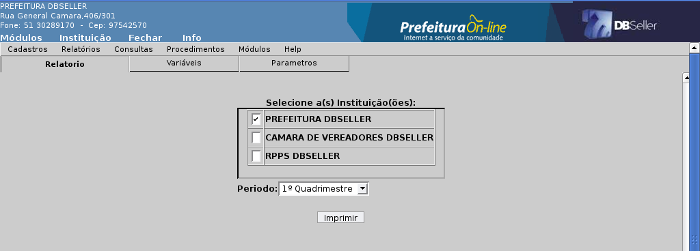
Figura
131 – Tela de emissão do relatório.

Figura 132 – Exemplo de emissão do relatório.
São relatórios estruturados e direcionados a uma finalidade específica. Logo, sua destinação se resume na realização de consistências e extração de dados de forma geral.
Este relatório foi elaborado com o intuito de facilitar o trabalho de consistenciar os saldos contábeis das contas do Ativo Disponível em relação aos saldos destas contas em Tesouraria, detectando de forma rápida e prática eventuais divergências e o encaminhamento das correções necessárias. Este demonstrativo obedece ao mesmo leiaute do Balancete de Verificação e tem como diferencial a impressão dos saldos e movimentação das contas da Tesouraria logo abaixo das contas contábeis, de forma destacada.
Para a identificação dos saldos inconsistentes, para cada registro analítico do relatório está disposta a expressão “Saldo Boletim”. A identificação de uma inconsistência nos saldos se dará da seguinte forma:
SALDO BOLETIM: Indica que o saldo da conta está correto;
S A L D O B O L E T I M: Indica saldos irregulares ou inconsistentes.
As eventuais diferenças são causadas em sua maioria por deficiências nos cadastros das contas em geral que fazem com que o processamento do boletim seja realizado de forma deficiente.
Para emitir o relatório, basta definir a Instituição, o intervalo de datas e clicar no botão "Processar".

Figura 133 – Tela de emissão do relatório.
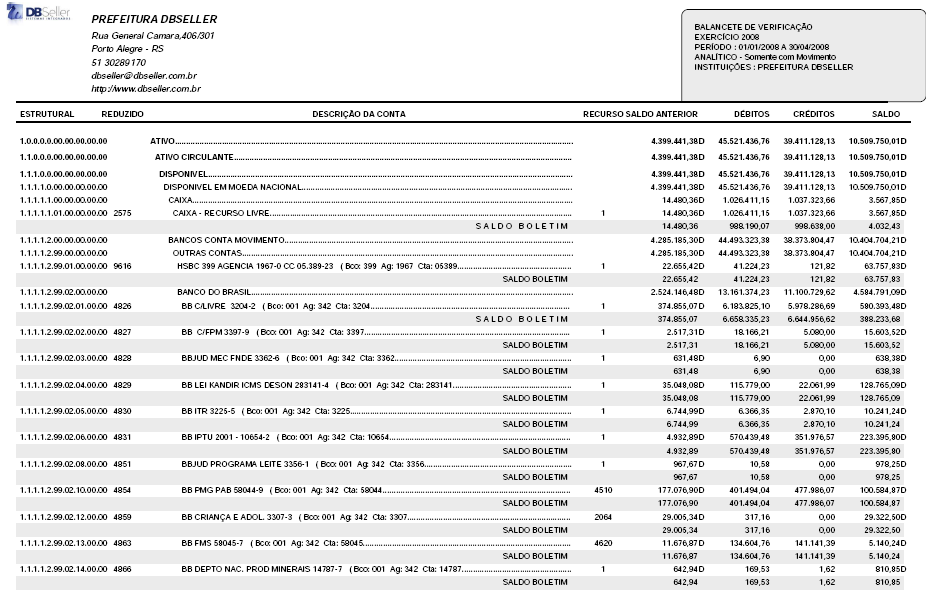
Figura 134 – Exemplo de emissão do relatório.
Este relatório foi elaborado sob o mesmo layout do Balancete de Verificação e lista o detalhamento em nível analítico das contas de Receitas e Despesas Orçamentárias.
Cabe lembrar que este relatório sempre imprimirá os dados das Receitas Arrecadadas e das Despesas Liquidadas. Sua maior finalidade consiste em:
auxiliar a conferência dos lançamentos contábeis de Liquidação e Arrecadação de Receitas e,
conferência dos lançamentos de encerramento do exercício.
Para emitir o relatório, o usuário deverá selecionar a Instituição e o intervalo de datas que deseja verificar e, conforme a necessidade, optar por imprimir o relatório “COM” ou “SEM” os lançamentos de ENCERRAMENTO DO EXERCICIO.

Figura
135 – Tela de emissão do relatório.
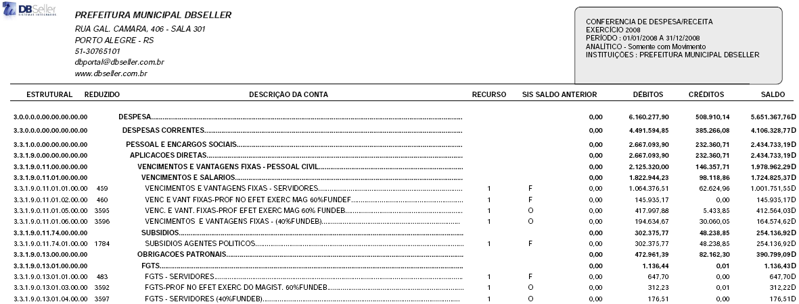
Figura 136 – Exemplo de emissão do relatório.
Este relatório proporciona aos usuários do módulo a emissão de um relatório em determinado período escolhido pelo usuário, tendo a opção de utilizar filtro demonstrando no mesmo as três fases da despesa pública, EMPENHO, LIQUIDAÇÃO e PAGAMENTO, e ainda quebrando o relatório por Credor e listar Restos a Pagar, ambos sim ou não no momento da emissão.

Figura
137 – Tela de emissão do relatório.

Figura 138 – Exemplo de emissão do relatório.
Este demonstrativo proporciona a possibilidade de conferência ágil e rápida dos boletins de caixa, que foram liberados pelo responsável da tesouraria, para verificar se estes foram lançados ou não na contabilidade da instituição. Salientamos porém, que para que o boletim apareça no relatório, é necessário que o mesmo tenha sido liberado pela tesouraria. Pode ser escolhido um determinado período, filtrando o status dos boletins, Todos, Processados ou Não Processados.

Figura
139 – Tela de emissão do relatório.

Figura
140 – Exemplo de emissão do relatório.
Este relatório tem a finalidade de demonstrar a disponibilidade financeira por Recurso Orçamentário em qualquer posição cronológica dentro de um exercício. Seu cálculo é realizado partindo do saldo em Tesouraria, segregado entre Caixa e Bancos, até o período informado no campo “Data Limite”, deduzindo deste:
o saldo da movimentação extra-orçamentária;
o saldo de Restos a Pagar de exercícios anteriores e,
o saldo a pagar dos empenhos do exercício, divididos em liquidados e não liquidados.
O saldo apurado pelo cálculo, positivo ou negativo, é exibido na coluna “Resultado”.

Figura 140 – Exemplo de emissão do relatório.
Demonstra exclusivamente a execução da Despesa Orçamentária em um intervalo de datas determinado, detalhando-a por desdobramento em seus valores empenhados, liquidados e pagos. Dispõe do recurso de filtrar seus dados por meio da aba padrão para o procedimento de “Filtro de dotações” (vide manual do Módulo Orçamento). Para fins de verificação, as opções selecionadas neste filtro podem ser exibidas no relatório, caso o usuário marcar a opção “Imprime filtro” constante na tela de emissão do relatório.
Para efetivar a impressão, basta um clique no botão “Gera Relatório”.

Figura
141 – Tela de emissão do relatório.
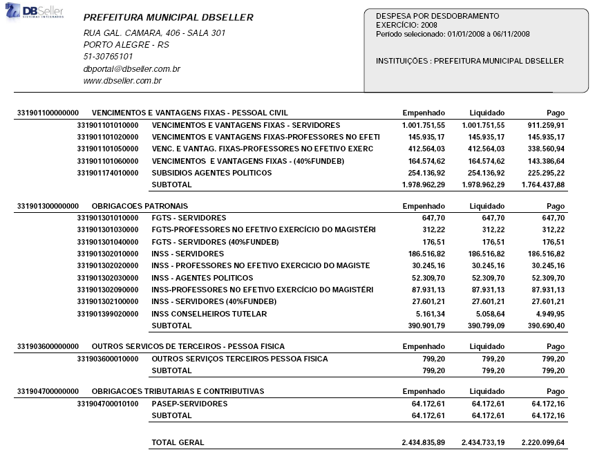
Figura 142 – Exemplo de emissão do relatório.
Este relatório lista todas as receitas por Instituição, com seu respectivo montante de valores arrecadados, dispondo os valores de todos os meses do exercício corrente em apenas uma página. Sua maior utilidade é servir como auxílio na montagem de informações sobre o desempenho da arrecadação da Receita Orçamentária durante este exercício.
A impressão deste relatório é simples e tem como filtro apenas a Instituição. Sempre será impressa a posição atual das arrecadações.

Figura
143 – Tela de emissão do relatório.

Figura
144 – Exemplo de emissão do relatório.
Possibilita a emissão de relatório que demonstra todas as receitas lançadas em uma determinada data escolhida pelo usuário do sistema, demonstrando de forma analítica, os valores arrecadados e os estornados caso haja ocorrência de estorno.
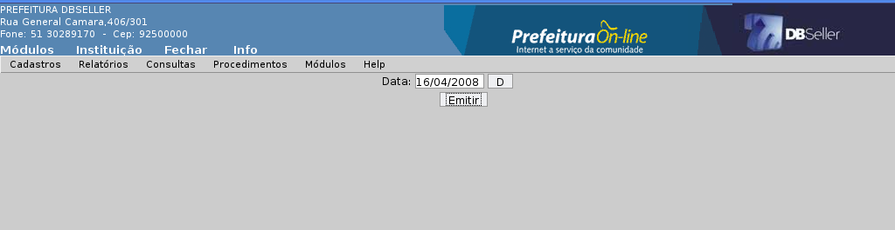
Figura
145 – Tela de emissão do relatório.

Figura 146 – Exemplo de emissão do relatório.
Este relatório demonstra os lançamentos diários de um determinado período, podendo ser emitido de forma geral ou filtrando por histórico padrão, após escolhidos os filtros basta clicar no botão processar para emitir o relatório.

Figura
147 – Exemplo de emissão do relatório.
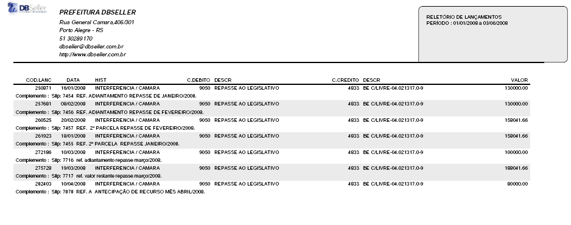
Figura
148 – Exemplo de emissão do relatório.
Tem por finalidade demonstrar os lançamentos contábeis de um ou mais empenhos. Apresenta as seguintes opções de impressão:
Seleção do Empenho: Um ou mais empenhos podem ser selecionados para efeito deste relatório. Para isto, basta informar o número ou clicar no link para ter mais opções de pesquisa;
Período: Informar o intervalo de datas desejado;
Tipo: O usuário terá a opção de imprimir um relatório:
Analítico, onde seráo listados todos os lançamentos contábeis do empenho selecionado contendo o detalhamento de todas as suas seqüências ou
Sintético, onde serão impressos de forma mais "limpa" as informações como o Nome do Credor, o código e data do lançamento, o código e descrição do Documento e o valor.
Ao final da impressão, será listado um resumo com o somatório dos valores agrupados pelo Documento.

Figura
149 – Tela de emissão do relatório.

Figura
150 – Exemplo de emissão do relatório.
Este relatório tem por finalidade listar informações sobre a Execução Orçamentária da Despesa com filtragem e agrupamento pelo credor. Deste modo, será possível visualizar a movimentação dos valores empenhados, liquidados ou pagos de um ou mais credores em ordem cronológica, listando ainda informações como os números das Notas, Ordens de Pagamento, Contas Pagadoras e descrição do Documento. As opções de impressão mais relevantes são:
Seleção do Credor: Um ou mais credores podem ser selecionados para a emissão do relatório. Para isto, basta informar o código do credor no CGM ou clicar no link e ter mais opções de pesquisa. Encontrado o credor, basta incluí-lo no filtro, clicando no botão "Lançar";
Período: Informar o intervalo de datas desejado para impressão do relatório;
Somente Empenho: Caso o usuário opte por Sim, o relatório será impresso informando o total por Documento, de cada empenho movimentado no intervalo de datas selecionado. É o relatório mais utilizado pelos usuários desta informação, por trazer de forma prática tudo o que foi empenhado, liquidado e/ou pago por um ou mais credores em um determinado período. Caso opte por Não, serão emitidos todos os lançamentos contábeis dos credores selecionados dentro do período escolhido.
Lista RP: o usuário, através desta opção, decidirá se deve imprimir ou não a movimentação dos Restos a Pagar dos credores e períodos selecionados;
Caixas de Seleção: são onde o usuário escolherá a fase da Despesa que deseja visualizar das informações a serem conferidas. As opções são Empenhado, Liquidado e Pago.

Figura
151 – Tela de emissão do relatório.

Figura
152 – Exemplo de emissão do relatório.
Emite, em um intervalo de datas, o montante contabilizado em cada Evento contábil constante no Cadastro de Documentos.
O relatório apresenta, de forma simplificada, os totais de cada Documento contabilizados por dia.

Figura
153 – Exemplo de emissão do relatório.
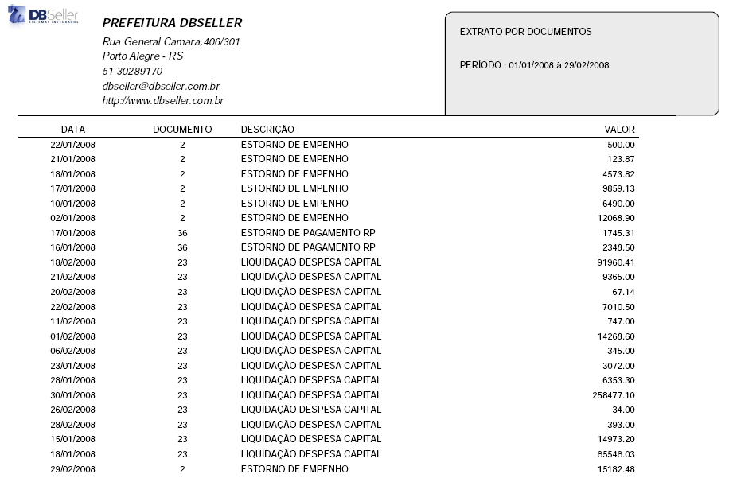
Figura 154 – Exemplo de emissão do relatório.
Esta consulta permite pesquisar um determinado Lançamento Contábil e visualizar seu conteúdo. Nesta modalidade de consulta, o usuário poderá pesquisar os lançamentos por:
código do lançamento;
valor do lançamento e,
por intervalo de datas.
Após a definição do filtro desejado, o usuário deverá clicar o botão "Consultar". Neste momento o sistema mostrará a lista dos lançamentos obtidos pela seleção.
O usuário ainda terá a opção de visualizar um melhor nível de detalhamento de cada registro. Para isto, basta clicar sobre o lançamento desejado e o sistema exibirá uma tela com todas as informações sobre o lançamento, inclusive com links onde serão exibidos demais informações sobre detalhes do orçamento, como por exemplo os dados cadastrais de uma receita ou uma dotação no orçamento.

Figura
155 – Tela inicial da consulta.
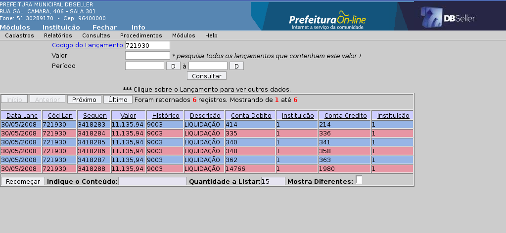
Figura
156 – Segunda tela da consulta.
O sistema oferece ao usuário da Contabilidade a opção de criar lotes de lançamentos com o objetivo de criar uma organização das informações conforme sua necessidade ou vontade. A criação dos lotes se dá no momento em que o usuário estiver Incluindo um Lançamento Contábil.
Para consultar um lote basta:
informar o nome do lote escolhido ou clicar no link Lote ou,
escolher um intervalo de datas.
Definido o filtro, o usuário poderá executar a pesquisa clicando no botão "Consultar". O sistema exibirá a listagem dos lançamentos.
Obtida a lista, o sistema trabalhará de forma análoga a Consulta de Lançamentos.
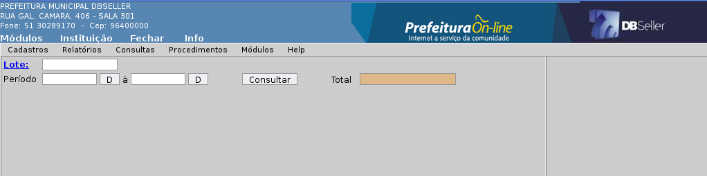
Figura
157 – Tela inicial da consulta.

Figura
158 – Segunda tela da consulta.
Esta
consulta permite consultar lançamentos pelo texto a ser
digitado no campo Texto Complementar quando o usuário estiver
Incluindo um Lançamento Contábil. Para consultar
lançamentos filtrando pelo complemento, basta clicar no link
Lançamento e
informar uma fração do texto que se deseja procurar
utilizando o caracter "%" conforme o exemplo:
%rpa
06
O sistema irá procurar todos os registros que tiverem no complemento a fração de texto informada. Ainda há a opção de filtrar por intervalo de datas.
Definidos os filtros, basta executar a pesquisa através do botão "Consultar". Após a exibição da lista o sistema trabalhará de forma análoga a Consulta de Lançamentos.
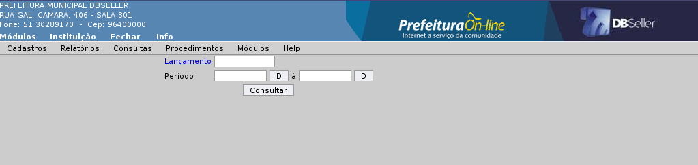
Figura
159 – Tela inicial da consulta.

Figura
160 – Segunda tela da consulta.

Figura
161 – Tela de detalhamento de um lançamento consultado.
Consiste em buscar um lançamento ou um grupo de lançamentos de uma ou mais suplementações no Orçamento. Para realizar esta pesquisa o usuário terá a opção de filtrar por:
código da suplementação ou do projeto, clicando no link Código da Suplementação ou,
por intervalo de datas.
Definidos os filtros, a pesquisa poderá ser executada através do botão "Consultar".
Após a obtenção da lista de lançamentos, o sistema trabalhará de forma análoga a Consulta de Lançamentos.

Figura
162 – Tela inicial da consulta.

Figura
162 – Segunda tela da consulta.
Consiste em pesquisar um Lançamento Contábil tendo por base o código da Receita Orçamentária a que está vinculado. Para executar a pesquisa, o usuário terá a opção de filtrar :
pela Receita Orçamentária, através do link Código da Receita ou,
por intervalo de datas.
Definidos os filtros, basta executar a pesquisa através do botão "Consultar". O sistema exibirá uma lista contendo os lançamentos selecionados.
Após a obtenção da lista o sistema trabalhará de forma análoga a Consulta de Lançamentos.

Figura
163 – Tela inicial da consulta.

Figura
163 – Segunda tela da consulta.
Consiste em pesquisar um LANÇAMENTO CONTÁBIL tendo por base o código da Dotação Orçamentária a que está vinculado. Para executar a pesquisa, o usuário terá a opção de filtrar :
pela Dotação Orçamentária, através do link Reduzido da Dotação ou,
por intervalo de datas.
Definidos os filtros, basta executar a pesquisa através do botão "Consultar". O sistema exibirá uma lista contendo os lançamentos selecionados.
Após a obtenção da lista o sistema trabalhará de forma análoga a Consulta de Lançamentos.

Figura
164 – Tela inicial da consulta.
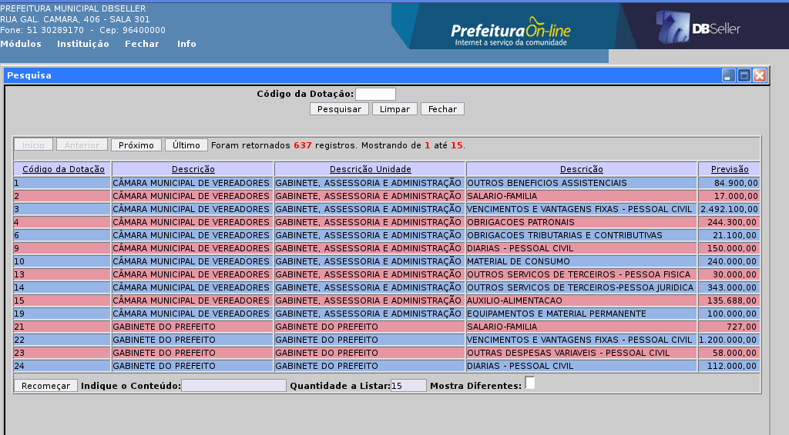
Figura
165 – Segunda tela da consulta.

Figura
166 – Tela de detalhamento da consulta.
Consiste em pesquisar um LANÇAMENTO CONTÁBIL tendo por base o o número do empenho a que está vinculado. Para executar a pesquisa, o usuário terá a opção de filtrar:
pelo número do empenho, através do link Código do Empenho onde ainda será oferecida a opção de filtro por CGM ou,
por intervalo de datas.
Definidos os filtros, basta executar a pesquisa através do botão "Consultar". O sistema exibirá uma lista contendo os lançamentos selecionados.
Após a obtenção da lista o sistema trabalhará de forma análoga a Consulta de Lançamentos.

Figura
167 – Tela inicial da consulta.
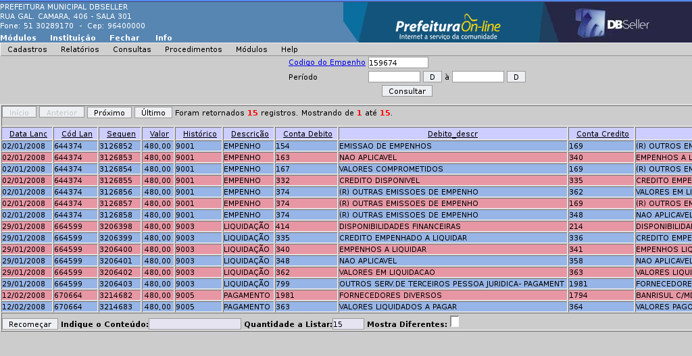
Figura 168 – Segunda tela da consulta.
Consiste em pesquisar lançamentos contábeis tendo por base os códigos constantes no CADASTRO DE DOCUMENTOS a que estão vinculados. Para executar a pesquisa, o usuário terá a opção de filtrar:
pelo documento, através do link Código do Documento ou,
por intervalo de datas.
Definidos os filtros, basta executar a pesquisa através do botão "Consultar". O sistema exibirá uma lista contendo os lançamentos selecionados. Após a obtenção da lista o sistema trabalhará de forma análoga a Consulta de Lançamentos.

Figura
169 – Tela inicial da consulta.
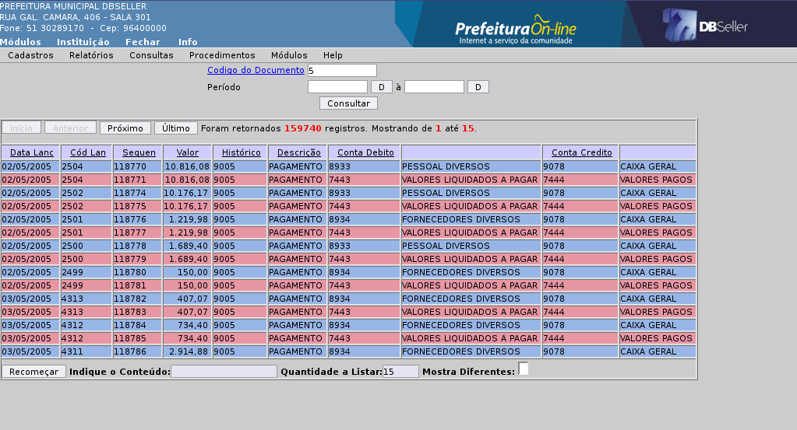
Figura
170 – Segunda tela da consulta.
Consiste em pesquisar um LANÇAMENTO CONTÁBIL tendo por base o código do CGM a que está vinculado. Para executar a pesquisa, o usuário terá a opção de filtrar:
pelo código do CGM, através do link CGM ou,
por intervalo de datas.
Definidos os filtros, basta executar a pesquisa através do botão "Consultar". O sistema exibirá uma lista contendo os lançamentos selecionados. Após a obtenção da lista o sistema trabalhará de forma análoga a Consulta de Lançamentos.
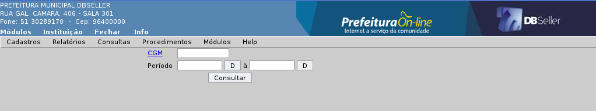
Figura
171 – Tela inicial da consulta.

Figura
172 – Segunda tela da consulta.
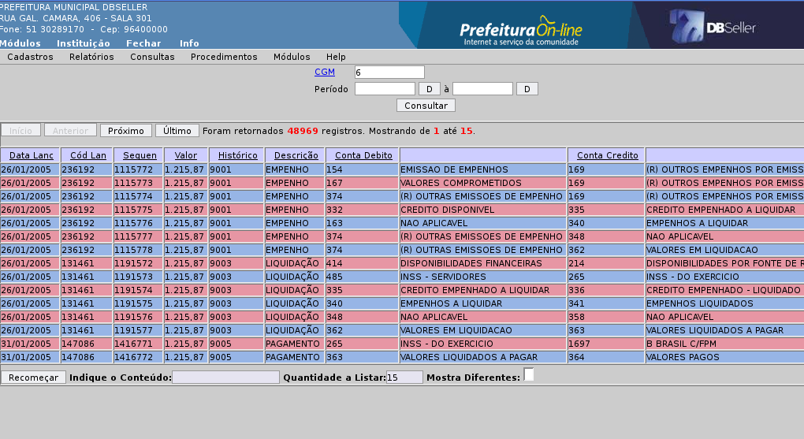
Figura
173 – Tela de detalhamento da consulta.
Nesta consulta podem ser verificadas , visualizando-se na tela as receitas orçamentárias, podendo-se optar por uma ou todas as receitas, filtrando pelo período desejado, que o sistema irá trazer para tela colunas com o saldo inicial, saldo anterior, saldo arrecadado, saldo arrecadado e saldo arrecadado acumulado.

Figura
174 – Tela inicial da consulta.
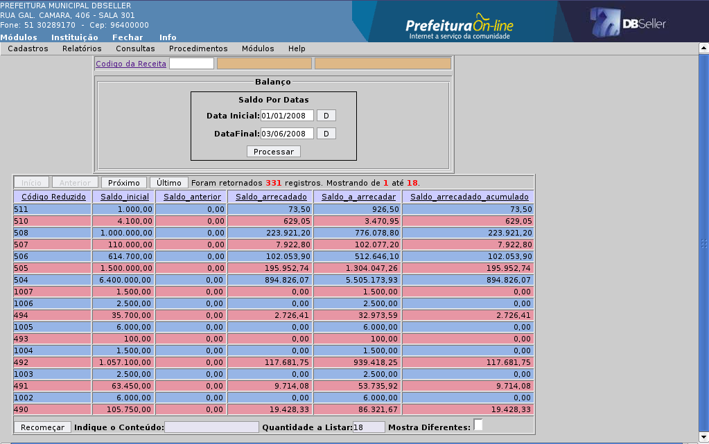
Figura
175 – Segunda tela da consulta.
Esta consulta possibilita a consulta às contas do Plano de Contas, onde pode-se visualizar os registros efetuados na conta escolhida, podendo ser filtrada pelo código da conta, pelo código reduzido e até mesmo pelo código estrutural, sendo que o sistema trará na tela o numero de código dos lançamentos, a seqüencia, a descrição do registro efetuada, o código de contrapartida do registro efetuado na conta a descrição da conta de contrapartida e o valor do lançamento efetuado.

Figura
176 – Tela inicial da consulta.

Figura
177 – Segunda tela da consulta.
Vide manual do Módulo Empenho.
Neste opção são executados todos os procedimentos, relacionados a manutenção dos lançamentos contábeis, a arrecadação da receita, tanto manual como através do processamento do boletim, geração dos arquivos txt para o PAD, bem como outros utilitários necessários ao andamento dos serviços a serem executados no módulo.
Neste item são efetuados os procedimentos de INCLUSÃO, ALTERAÇÃO ou EXCLUSÃO dos lançamentos contábeis, aqueles que são executados manualmente pelos usuários do sistema, como abertura do exercício, transferências entre contas, registros no sistema compensado, registros no Sistema Patrimonial e tantos outros que se fizerem necessários na execução orçamentária do ente público.

Figura
178 – Formulário de inclusão de um lançamento
contábil.
Neste item é executada a arrecadação manual da receita, em casos que porventura vierem a ser necessários. Basta incluir o código reduzido da conta em que a receita será lançada, caixa ou banco, o código reduzido da receita a ser lançada, o valor a ser lançado e algum texto complementar que venha a ser necessário.
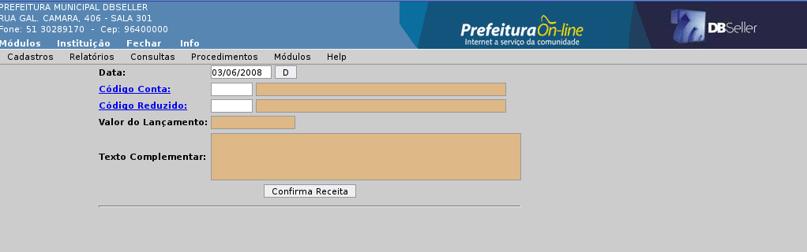
Figura
179 – Formulário de inclusão de uma Arrecadação
Manual.
Este item é utilizado para o processamento do boletim liberado pela tesouraria, sendo que o processamento executará os lançamentos da receita orçamentária e toda a movimentação extra orçamentária, processando todos os registros e lançando na Contabilidade. O estorno do boletim desfaz todos os registros efetuados. Lembrando, para que o processamento possa ser efetuado é necessário que o boletim a ser processado esteja liberado pelo responsável pela Tesouraria.
As opções de PROCESSA e ESTORNA Boletim, podem ser acessadas a partir do mesmo submenu, “Boletim de Tesouraria”.

Figura
180 – Tela de acesso ao Boletim.

Figura
181 – Boletim selecionado para processamento.

Figura
182 – Confirmação do processamento do Boletim.
Esta opção possibilita a geração de todos os arquivos TXT necessários para analise do Programa Autenticador de Dados (PAD) do Tribunal de Contas do Estado do Rio Grande do Sul, que é executada bimestralmente, sendo este filtro, o do bimestre requerido, colocado logo no início da geração dos arquivos, que poderão ser gerados individualmente, ou agrupados de acordo com a marcação solicitada, bem como a geração de todos de uma única vez.
O usuário que irá gerar os arquivos, pode acompanhar a geração dos mesmos, na própria tela, no canto à direita e abaixo em uma janela que, à medida em que os arquivos vão sendo gerados, vai alinhando um abaixo do outro e colocando um OK ao lado de cada arquivo gerado. Ao final da geração do arquivos solicitados o sistema também gera estes mesmos arquivos em uma pasta compactada, para agilizar a cópia dos mesmos para dentro da pasta previamente criada para que os mesmo sejam copiados e guardados para posterior análise.
Salienta-se ainda, que estes mesmos arquivos são os que devem ser utilizados para a prestação de contas da saúde, Módulo de Gestão da Saúde (MGS), da Secretaria da Saúde do Estado do Rio Grande do Sul, estando, todos os necessários à tomada de contas, de acordo com as exigências da referida secretaria.
Após a escolha dos arquivos para geração, basta clicar no botão processar e aguarda o término do procedimento.

Figura
183 – Tela de acesso ao procedimento de geração
dos arquivos para o SIAPC/PAD.

Figura
184 – Exemplo da geração individual do arquivo
“DECRETO.TXT”.

Figura
184 – Download do arquivo “DECRETO.TXT”.
Nesta opção é possível executar de forma automática os lançamentos de encerramento do exercício, logicamente após executadas todas as conferências entre os balancetes de receita, despesa e verificação e tomadas todas as providências de correções e ajustes necessários para que o exercício possa efetivamente ser encerrado. Todos os lançamentos executado neste procedimento devem estar previamente configurados através da rotina CADASTRO DE TRANSAÇÕES, citada no início deste Manual.
Logo no início, o sistema solicita que seja escolhida a data em que os lançamentos de encerramento devem ser executados, ficando, logo após executado o processamento do primeiro lote de lançamentos esta data como padrão, não podendo mais ser alterada, a não ser que o primeiro lote seja cancelado, sendo então possível a alteração da mesma.
Após a escolha da data, o primeiro lote a ser processado é o de inscrição de Restos a Pagar Não Processados.
O segundo lote executa o encerramento das contas de Resultado, zerando o saldo das contas de Receita e Despesa.
O terceiro lote executa o zeramento do saldo das contas do sistema orçamentário, dentro do sistema compensado.
O quarto e último lote de lançamentos executa a transferência do saldo das contas de resultado para a apuração do resultado do exercício.
Após executado o processamento de todos os lotes, pode-se cancelar o procedimento, bastando clicar no botão “cancelar procedimento” para o primeiro, terceiro e quarto lotes, e o botão “estornar/apagar” para o segundo lote. O sistema retornará a posição inicial antes de efetuado o processamento.
IMPORTANTE ! O encerramento é individualizado por Instituição.

Figura
185 – Tela de acesso a rotina de Encerramento do Exercício.
Este é um procedimento de segurança que deve ter seu uso permitido apenas a(o) Contador(a) do Município. Consiste em dar a este usuário a permissão de bloquear qualquer evento, automático ou não, que resulte em lançamentos contábeis, sem o seu conhecimento e consentimento. A periodicidade deste bloqueio é de livre escolha do usuário responsável pela Contabilidade e visa eliminar a possibilidade de que os registros contábeis apurados até um determinado período sejam, acidentalmente ou não, alterados de forma a distorcer informações por ele prestadas através da emissão de relatórios ou por meio eletrônico.
Um bom exemplo seria o encerramento de um determinado quadrimestre onde são apurados os índices constitucionais previstos na LRF para o Relatório de Gestão Fiscal. Se forem alterados dados contábeis envolvidos na apuração destes números após sua publicação, isto configurará uma distorção grave por tratar-se de uma informação legal. O mesmo vale para qualquer informação fornecida pela Contabilidade, já que todos os dados por ela fornecidos tem, no mínimo, uma finalidade legal ou gerencial.
Para configurar a data do encerramento, o usuário deverá acessar o menu, informar a data desejada no campo apropriado e clicar no botão "Alterar".
IMPORTANTE ! O encerramento é individualizado por Instituição.

Figura
186 – Tela de acesso a rotina de Encerramento do Exercício.
Esta é uma rotina que tem por finalidade a readequação dos lançamentos contábeis processados automaticamente pelo sistema, que por algum motivo não foram executados ou foram executados parcialmente. Pode-se citar como exemplo um erro no cadastro de transações envolvendo alguma conta de Despesa Orçamentária, com reflexo no procedimento de liquidação de um empenho que por este motivo gere lançamento incompleto ou incorreto em sua classificação contábil.
Pode ser executada de forma parcial ou total, de acordo com a necessidade do problema ocorrido, sendo o primeiro parâmetro solicitado o código do documento, que nada mais é do que os documentos cadastrados no CADASTRO DE DOCUMENTOS DE LANÇAMENTOS. O segundo parâmetro refere-se ao número do empenho, caso o reprocessamento refira-se à despesa, o terceiro parâmetro diz respeito ao código do lançamento, que poderá ser obtido através das consultas existentes no sistema ou mesmo na emissão do Livro Razão (por contas) e, por último, intervalo de datas.
É importante salientar que a condição mínima para realizar um reprocessamento, é a informação de um documento ou de um empenho.

Figura
187 – Tela de acesso para o reprocessamento de lançamentos.
Este é um ítem que tem como finalidade demonstrar que o usuário tem a permissão de editar a configuração de parâmetros dos relatórios que a utilizam. Aqueles usuários que não tem ou que não podem visualizar este ítem de menu quando estiverem logados no sistema só terão o direito de visualizar esta configuração.
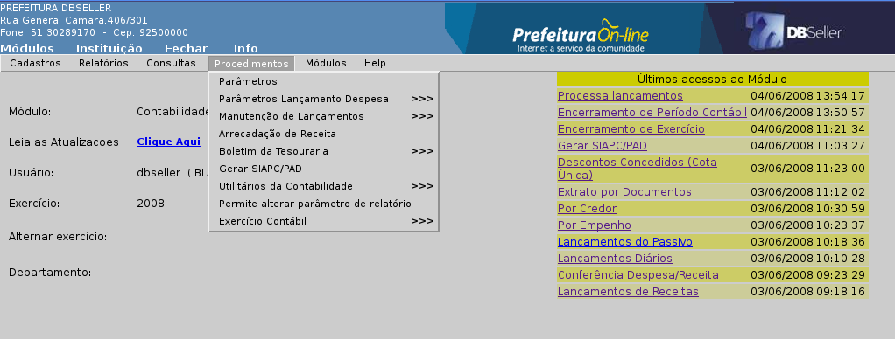 Figura
188– Exemplo de um usuário que tem permissão para
editar parâmetros de relatórios.
Figura
188– Exemplo de um usuário que tem permissão para
editar parâmetros de relatórios.
Este procedimento é destinado a duplicação de todos os cadastros contábeis e orçamentários do exercício vigente para o exercício seguinte. Sua principal utilidade é preparar a base cadastral para a elaboração do Orçamento do próximo ano. Para este efeito, são duplicados os cadastros:
do Plano de Contas, sintético e analítico e grupos de contas;
dos dados bancários das contas;
dos Elementos de Despesa e Fontes de Receita;
do cadastro dos desdobramentos da Receita no Orçamento.
Para efetivar a inclusão, basta acessar a rotina e clicar no botão “Incluir”. O sistema demonstrará o progresso do procedimento até sua conclusão.
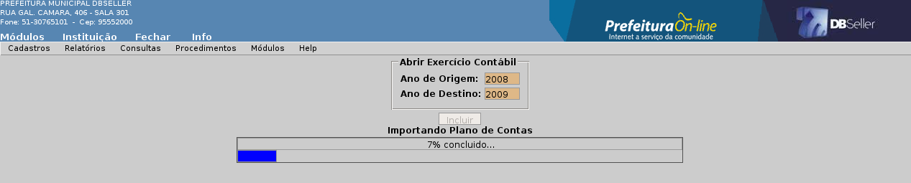
Figura
189 – Demonstração do procedimento em execução.
Oferece a possibilidade de desfazer o procedimento de inclusão de exercício contábil. Seu processamento consiste em remover do exercício seguinte todos os cadastros duplicados. A forma de acesso e execução desta rotina é análoga a de inclusão, bastando ao usuário acessá-la e confirmar clicando no botão “Cancelar”.
Este procedimento não será permitido se, no exercício seguinte já existirem dados do Orçamento (Dotações ou Receitas).

Figura
190 – Tela para cancelar o procedimento.
Trata-se basicamente da geração de arquivos em formato txt para fins de informação ao MGS (Monitoramento Geral da Saúde).
Esta funcionalidade oferece ao usuário a facilidade de gerar apenas os arquivos necessários para informação ao MGS. O funcionamento é idêntico ao da geração dos arquivos para o SIAPC/PAD. Para fazer a geração, basta definir o período, os arquivos e executar o procedimento clicando no botão “Processar”.

Figura
191 – Tela para geração dos arquivos para o MGS.
Este menu tem a finalidade de gerar os arquivos de informações digitais que poderão ser solicitados a qualquer momento pelo TCE aos Municípios.
Para gerar os arquivos txt para disponibilizá-los a Fiscalização, o usuário deverá passar pelas seguintes fases:
Dados da geração do arquivo: nesta aba deverão ser informados os seguintes dados:
Código Tribunal de Contas: basta clicar e o sistema assumirá automaticamente o nome do TCE-RS (por enquanto é o único cadastrado);
Data Inicial: informar a data inicial. Recomendável informar sempre o primeiro dia do ano corrente;
Data Final: informar a data final. Recomenda-se informar a data solicitada pelo TCE;
Dia de pagamento da folha: informar o dia em que o município normalmente paga a folha;
Código da remessa do lote: livre digitação;
Informações adicionais Leiame: livre digitação.

Figura
192 – Primeira tela para geração dos arquivos de
informações digitais.
Responsáveis: nesta aba deverão ser informados os responsáveis pelas informações geradas nos arquivos. Os dados a informar são o Nome, Cargo, número do documento (CPF ou CRC, no caso do Contador) e o Tipo de responsabilidade, que compreendem:
Titular Responsável: Prefeito Municipal;
Responsável da Época: Substituto do Prefeito, caso este esteja ausente. Caso contrário, repete-se o nome do Prefeito;
Responsável pela Geração dos Dados: Geralmente o usuário que está executando este procedimento. Normalmente um servidos do CPD do Município;
Contador Responsável pelas Informações: Contador do Município ou da Instituição;
Responsável Controle Interno: servidor responsável pelo Controle Interno.
Para gravar os registros, basta um clique no botão “Incluir”. O sistema somente liberará a próxima aba se todos os responsáveis forem inclusos.
Figura
193 – Segunda tela para geração dos arquivos de
informações digitais.
Arquivos: nesta aba serão efetivamente gerados os arquivos txt. Estão disponíveis todos os arquivos contidos no Manual Técnico editado pelo próprio TCE e também os arquivos do SIAPC/PAD. Uma recomendação importante para uma boa execução da rotina é fazer em separado a geração dos arquivos “TCE_4111 - LIVRO DIÁRIO GERAL” e o “TCE_4010 - ARRECADAÇÃO MUNICIPAL”, pois tendem a ser extremamente extensos representam uma dificuldade para qualquer servidor. Os demais podem ser gerados de uma só vez. Recomenda-se ainda que sejam sempre gerados após o término do expediente normal do Município.

Figura 194 – Terceira tela para geração dos arquivos de informações digitais.
|
DBSeller Serviços de Informática Ltda. – www.dbseller.com.br Rua General Câmara, 406/301 – Porto Alegre – Fone: (51) 3028-9170 |
|